Gallery¶
Rendered examples covering a range of layout patterns. Click any heading in the right-hand table of contents to jump to an example.
Main Examples¶
Simple Pipeline¶
Minimal two-line pipeline with no sections.
CLI command:
Mermaid source
%%metro title: Simple Pipeline
%%metro style: dark
%%metro line: main | Main | #4CAF50
%%metro line: qc | Quality Control | #2196F3 | dashed
graph LR
input[Input]
fastqc[FastQC]
trim[Trimming]
align[Alignment]
quant[Quantification]
multiqc[MultiQC]
input -->|main| trim
trim -->|main| align
align -->|main| quant
input -->|qc| fastqc
trim -->|qc| fastqc
quant -->|qc| multiqc
fastqc -->|qc| multiqc
Rendered output:

Line Spread¶
Demonstrates the %%metro line_spread: axis with one per-section override per section: bundle (default) merges shared lines onto one trunk that cascades downward, centered balances that bundle about the midline, and rails draws each line as a parallel rail with shared stations as interchanges.
CLI command:
Mermaid source
%%metro title: Line spread modes
%%metro style: dark
%%metro line: dna | DNA | #4CAF50
%%metro line: rna | RNA | #2196F3
%%metro line: cfdna | cfDNA | #E91E63
%%metro line_spread: bundle
%%metro line_spread: centered | centered_sec
%%metro line_spread: rails | rails_sec
%% Rail panel input/output files: the rails fan out from the CRAM terminus and
%% fan back in to the VCF terminus (a fan-in), each meeting a buffer-stop marker.
%% rna skips Filter, so Filter is a partial interchange: the rna rail bridges
%% straight over its connector rather than stopping there.
%%metro file: r_in | CRAM
%%metro file: r_out | VCF
%%metro grid: bundle_sec | 0,0
%%metro grid: centered_sec | 1,0
%%metro grid: rails_sec | 2,0
graph LR
subgraph bundle_sec [bundle]
b_in[Input]
b_dna[DNA]
b_rna[RNA]
b_cf[cfDNA]
b_out[QC]
b_in -->|dna| b_dna
b_in -->|rna| b_rna
b_in -->|cfdna| b_cf
b_dna -->|dna| b_out
b_rna -->|rna| b_out
b_cf -->|cfdna| b_out
end
subgraph centered_sec [centered]
c_in[Align]
c_dna[DNA]
c_rna[RNA]
c_cf[cfDNA]
c_out[Merge]
c_in -->|dna| c_dna
c_in -->|rna| c_rna
c_in -->|cfdna| c_cf
c_dna -->|dna| c_out
c_rna -->|rna| c_out
c_cf -->|cfdna| c_out
end
subgraph rails_sec [rails]
r_in[ ]
r_call[Call]
r_filter[Filter]
r_annotate[Annotate]
r_out[ ]
r_in -->|dna,rna,cfdna| r_call
r_call -->|dna,cfdna| r_filter
r_call -->|rna| r_annotate
r_filter -->|dna,cfdna| r_annotate
r_annotate -->|dna,rna,cfdna| r_out
end
b_out -->|dna,rna,cfdna| c_in
Rendered output:
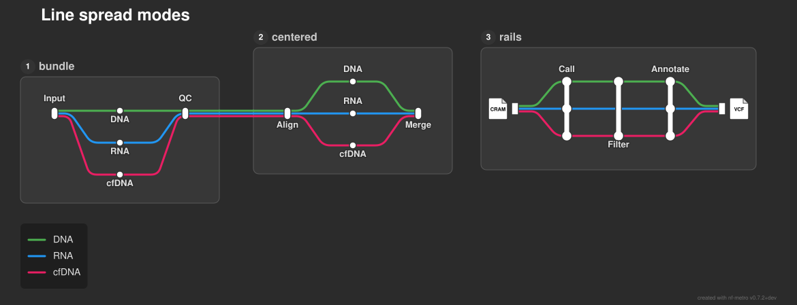
Rnaseq Auto¶
Demonstrates fully auto-inferred layout: no %%metro grid: directives needed. See nf-core Pipelines for the full gallery.
CLI command:
Mermaid source
%%metro title: nf-core/rnaseq
%%metro logo: examples/nf-core-rnaseq_logo_dark.png
%%metro style: dark
%%metro line: star_rsem | Aligner: STAR, Quantification: RSEM | #0570b0
%%metro line: star_salmon | Aligner: STAR, Quantification: Salmon (default) | #2db572
%%metro line: hisat2 | Aligner: HISAT2, Quantification: None | #f5c542
%%metro line: pseudo_salmon | Pseudo-aligner: Salmon, Quantification: Salmon | #e63946
%%metro line: pseudo_kallisto | Pseudo-aligner: Kallisto, Quantification: Kallisto | #7b2d3b
%%metro legend: bl
graph LR
subgraph preprocessing [Pre-processing]
cat_fastq[cat fastq]
fastqc_raw[FastQC]
infer_strandedness[infer strandedness]
umi_tools_extract[UMI-tools extract]
fastp[FastP]
trimgalore[Trim Galore!]
fastqc_trimmed[FastQC]
bbsplit[BBSplit]
sortmerna[SortMeRNA]
cat_fastq -->|star_salmon,star_rsem,hisat2,pseudo_salmon,pseudo_kallisto| fastqc_raw
fastqc_raw -->|star_salmon,star_rsem,hisat2,pseudo_salmon,pseudo_kallisto| infer_strandedness
infer_strandedness -->|star_salmon,star_rsem,hisat2,pseudo_salmon,pseudo_kallisto| umi_tools_extract
umi_tools_extract -->|star_salmon,star_rsem,hisat2,pseudo_salmon,pseudo_kallisto| fastp
umi_tools_extract -->|star_salmon,star_rsem,hisat2,pseudo_salmon,pseudo_kallisto| trimgalore
fastp -->|star_salmon,star_rsem,hisat2,pseudo_salmon,pseudo_kallisto| fastqc_trimmed
trimgalore -->|star_salmon,star_rsem,hisat2,pseudo_salmon,pseudo_kallisto| fastqc_trimmed
fastqc_trimmed -->|star_salmon,star_rsem,hisat2,pseudo_salmon,pseudo_kallisto| bbsplit
bbsplit -->|star_salmon,star_rsem,hisat2,pseudo_salmon,pseudo_kallisto| sortmerna
end
subgraph genome_align [Genome alignment & quantification]
star[STAR]
hisat2_align[HISAT2]
rsem[RSEM]
salmon_quant[Salmon]
umi_tools_dedup[UMI-tools dedup]
star -->|star_rsem| rsem
star -->|star_salmon| umi_tools_dedup
umi_tools_dedup -->|star_salmon| salmon_quant
hisat2_align -->|hisat2| umi_tools_dedup
end
subgraph postprocessing [Post-processing]
samtools[SAMtools]
picard[Picard]
bedtools[BEDTools]
bedgraph[bedGraphToBigWig]
stringtie[StringTie]
samtools -->|star_salmon,star_rsem,hisat2| picard
picard -->|star_salmon,star_rsem,hisat2| bedtools
bedtools -->|star_salmon,star_rsem,hisat2| bedgraph
bedgraph -->|star_salmon,star_rsem,hisat2| stringtie
end
subgraph pseudo_align [Pseudo-alignment & quantification]
salmon_pseudo[Salmon]
kallisto[Kallisto]
multiqc_pseudo[MultiQC]
salmon_pseudo -->|pseudo_salmon| multiqc_pseudo
kallisto -->|pseudo_kallisto| multiqc_pseudo
end
subgraph qc_report [Quality control & reporting]
rseqc[RSeQC]
preseq[Preseq]
qualimap[Qualimap]
dupradar[dupRadar]
deseq2_pca[DESeq2 PCA]
kraken2[Kraken2/Bracken]
multiqc_final[MultiQC]
rseqc -->|star_salmon,star_rsem,hisat2| preseq
preseq -->|star_salmon,star_rsem,hisat2| qualimap
qualimap -->|star_salmon,star_rsem,hisat2| dupradar
dupradar -->|star_salmon,star_rsem,hisat2| deseq2_pca
deseq2_pca -->|star_salmon,star_rsem,hisat2| kraken2
kraken2 -->|star_salmon,star_rsem,hisat2| multiqc_final
end
%% Inter-section edges
sortmerna -->|star_salmon,star_rsem| star
sortmerna -->|hisat2| hisat2_align
sortmerna -->|pseudo_salmon| salmon_pseudo
sortmerna -->|pseudo_kallisto| kallisto
salmon_quant -->|star_salmon| samtools
rsem -->|star_rsem| samtools
umi_tools_dedup -->|hisat2| samtools
stringtie -->|star_salmon,star_rsem,hisat2| rseqc
Rendered output:
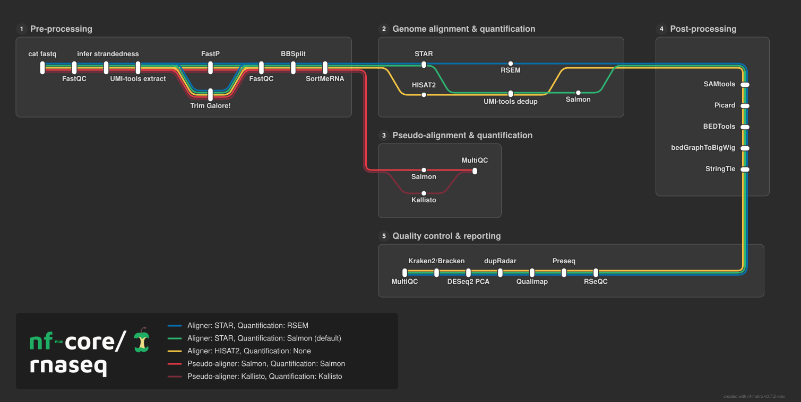
Rnaseq Sections¶
Same pipeline with manual %%metro grid: overrides and file markers, showing how explicit directives can fine-tune placement.
CLI command:
Mermaid source
%%metro title: nf-core/rnaseq
%%metro logo: examples/nf-core-rnaseq_logo_dark.png
%%metro style: dark
%%metro file: fastq_in | FASTQ
%%metro file: report_final | HTML
%%metro file: report_quant | HTML
%%metro file: report_bowtie2 | HTML
%%metro line: star_rsem | Aligner: STAR, Quantification: RSEM | #0570b0
%%metro line: star_salmon | Aligner: STAR, Quantification: Salmon (default) | #2db572
%%metro line: hisat2 | Aligner: HISAT2, Quantification: None | #f5c542
%%metro line: bowtie2_salmon | Aligner: Bowtie2, Quantification: Salmon | #ff8c00
%%metro line: pseudo_salmon | Pseudo-aligner: Salmon, Quantification: Salmon | #e63946
%%metro line: pseudo_kallisto | Pseudo-aligner: Kallisto, Quantification: Kallisto | #7b2d3b
%%metro legend: bl
graph LR
subgraph preprocessing [Pre-processing]
%%metro exit: right | star_salmon, star_rsem, hisat2, bowtie2_salmon
%%metro exit: bottom | pseudo_salmon, pseudo_kallisto
fastq_in[ ]
cat_fastq[Cat FASTQ]
fastqc_raw[FastQC]
infer_strandedness[Infer Strandedness]
umi_tools_extract[UMI-tools Extract]
fastp[fastp]
trimgalore[Trim Galore!]
fastqc_trimmed[FastQC]
bbsplit[BBSplit]
sortmerna[SortMeRNA]
ribodetector[RiboDetector]
fastqc_filtered[FastQC]
fastq_in -->|pseudo_salmon,pseudo_kallisto,star_salmon,star_rsem,hisat2,bowtie2_salmon| cat_fastq
cat_fastq -->|pseudo_salmon,pseudo_kallisto,star_salmon,star_rsem,hisat2,bowtie2_salmon| fastqc_raw
fastqc_raw -->|pseudo_salmon,pseudo_kallisto,star_salmon,star_rsem,hisat2,bowtie2_salmon| infer_strandedness
infer_strandedness -->|pseudo_salmon,pseudo_kallisto,star_salmon,star_rsem,hisat2,bowtie2_salmon| umi_tools_extract
umi_tools_extract -->|pseudo_salmon,pseudo_kallisto,star_salmon,star_rsem,hisat2,bowtie2_salmon| fastp
umi_tools_extract -->|pseudo_salmon,pseudo_kallisto,star_salmon,star_rsem,hisat2,bowtie2_salmon| trimgalore
fastp -->|pseudo_salmon,pseudo_kallisto,star_salmon,star_rsem,hisat2,bowtie2_salmon| fastqc_trimmed
trimgalore -->|pseudo_salmon,pseudo_kallisto,star_salmon,star_rsem,hisat2,bowtie2_salmon| fastqc_trimmed
fastqc_trimmed -->|pseudo_salmon,pseudo_kallisto,star_salmon,star_rsem,hisat2,bowtie2_salmon| bbsplit
fastqc_trimmed -->|pseudo_salmon,pseudo_kallisto,star_salmon,star_rsem,hisat2,bowtie2_salmon| sortmerna
fastqc_trimmed -->|pseudo_salmon,pseudo_kallisto,star_salmon,star_rsem,hisat2,bowtie2_salmon| ribodetector
bbsplit -->|pseudo_salmon,pseudo_kallisto,star_salmon,star_rsem,hisat2,bowtie2_salmon| fastqc_filtered
sortmerna -->|pseudo_salmon,pseudo_kallisto,star_salmon,star_rsem,hisat2,bowtie2_salmon| fastqc_filtered
ribodetector -->|pseudo_salmon,pseudo_kallisto,star_salmon,star_rsem,hisat2,bowtie2_salmon| fastqc_filtered
end
subgraph genome_align [Genome alignment & quantification]
%%metro entry: left | star_salmon, star_rsem, hisat2, bowtie2_salmon
%%metro exit: right | star_salmon, star_rsem
%%metro exit: right | hisat2
star[STAR]
hisat2_align[HISAT2]
bowtie2_align[Bowtie2]
rsem[RSEM]
salmon_quant[Salmon]
umi_tools_dedup[UMI-tools Dedup]
tximport_ga[tximport]
summarized_exp_ga[Sum. Exp.]
multiqc_bowtie2[MultiQC]
report_bowtie2[ ]
_h1[hidden]
_h2[hidden]
_h3[hidden]
star -->|star_rsem| rsem
star -->|star_salmon| umi_tools_dedup
hisat2_align -->|hisat2| umi_tools_dedup
bowtie2_align -->|bowtie2_salmon| umi_tools_dedup
umi_tools_dedup -->|star_salmon| salmon_quant
umi_tools_dedup -->|hisat2| _h1
_h1 -->|hisat2| _h2
_h2 -->|hisat2| _h3
salmon_quant -->|star_salmon| tximport_ga
rsem -->|star_rsem| tximport_ga
tximport_ga -->|star_salmon,star_rsem| summarized_exp_ga
umi_tools_dedup -->|bowtie2_salmon| salmon_quant
salmon_quant -->|bowtie2_salmon| multiqc_bowtie2
multiqc_bowtie2 -->|bowtie2_salmon| report_bowtie2
end
subgraph pseudo_align [Pseudo-alignment & quantification]
%%metro entry: left | pseudo_salmon, pseudo_kallisto
salmon_pseudo[Salmon]
kallisto[Kallisto]
tximport_pa[tximport]
summarized_exp_pa[Sum. Exp.]
multiqc_quant[MultiQC]
report_quant[ ]
salmon_pseudo -->|pseudo_salmon| tximport_pa
kallisto -->|pseudo_kallisto| tximport_pa
tximport_pa -->|pseudo_salmon,pseudo_kallisto| summarized_exp_pa
summarized_exp_pa -->|pseudo_salmon,pseudo_kallisto| multiqc_quant
multiqc_quant -->|pseudo_salmon,pseudo_kallisto| report_quant
end
subgraph postprocessing [Post-processing]
%%metro direction: TB
%%metro entry: left | star_salmon, star_rsem, hisat2
%%metro exit: bottom | star_salmon, star_rsem, hisat2
samtools[SAMtools]
picard[Picard]
bedtools[BEDTools]
bedgraph[bedGraphToBigWig]
stringtie[StringTie]
samtools -->|star_salmon,star_rsem,hisat2| picard
picard -->|star_salmon,star_rsem,hisat2| bedtools
bedtools -->|star_salmon,star_rsem,hisat2| bedgraph
bedgraph -->|star_salmon,star_rsem,hisat2| stringtie
end
subgraph qc_report [Quality control & reporting]
%%metro direction: RL
%%metro entry: top | star_salmon, star_rsem, hisat2
rseqc[RSeQC]
preseq[Preseq]
qualimap[Qualimap]
dupradar[dupRadar]
featurecounts[featureCounts]
deseq2_pca[DESeq2 PCA]
kraken2[Kraken2/Bracken]
sylph[Sylph]
multiqc_final[MultiQC]
report_final[ ]
rseqc -->|star_salmon,star_rsem,hisat2| preseq
preseq -->|star_salmon,star_rsem,hisat2| qualimap
qualimap -->|star_salmon,star_rsem,hisat2| dupradar
dupradar -->|star_salmon,star_rsem,hisat2| featurecounts
featurecounts -->|star_salmon,star_rsem,hisat2| deseq2_pca
deseq2_pca -->|star_salmon,star_rsem,hisat2| kraken2
deseq2_pca -->|star_salmon,star_rsem,hisat2| sylph
kraken2 -->|star_salmon,star_rsem,hisat2| multiqc_final
sylph -->|star_salmon,star_rsem,hisat2| multiqc_final
multiqc_final -->|star_salmon,star_rsem,hisat2| report_final
end
%% Inter-section edges
fastqc_filtered -->|star_salmon,star_rsem| star
fastqc_filtered -->|hisat2| hisat2_align
fastqc_filtered -->|bowtie2_salmon| bowtie2_align
fastqc_filtered -->|pseudo_salmon| salmon_pseudo
fastqc_filtered -->|pseudo_kallisto| kallisto
summarized_exp_ga -->|star_salmon,star_rsem| samtools
_h3 -->|hisat2| samtools
stringtie -->|star_salmon,star_rsem,hisat2| rseqc
Rendered output:
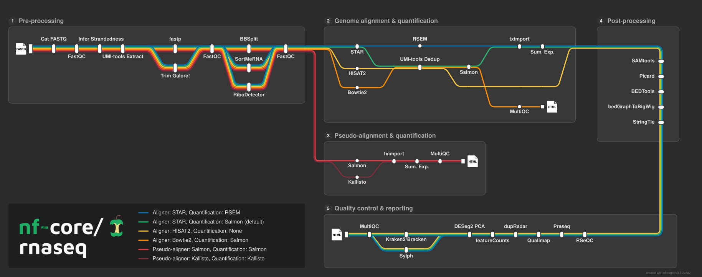
Genomic Pipeline¶
Multi-section genomic variant-calling pipeline: same-direction sections stacked in one column (serpentine carriage-return) plus a multi-row QC collector fan-in descending a shared inter-column corridor.
CLI command:
Mermaid source
%%metro title: Variant Calling Pipeline
%%metro style: dark
%%metro legend: br
%%metro line_order: definition
%%metro center_ports: true
%%metro compact_offsets: true
%%metro file: fastq_in | FASTQ
%%metro file: bam_in | BAM
%%metro file: cram_in | CRAM
%%metro file: vcf_out | VCF
%%metro file: report_out | HTML
%%metro line: germline | Germline | #0570b0
%%metro line: tumor_only | Tumor only | #d62728
%%metro line: somatic | Tumor-normal pair | #756bb1
graph LR
subgraph preprocessing [Pre-processing]
%%metro exit: right | germline, tumor_only, somatic
fastq_in[ ]
bam_in[ ]
fastqc[FastQC]
fastp[FastP]
umi[UMI consensus]
bwa[BWA-MEM]
bwa2[BWA-MEM2]
dragmap[DragMap]
sentieon_bwa[Sentieon BWA]
merge_index[samtools merge/index]
markdup[MarkDuplicates]
sentieon_dedup[Sentieon Dedup]
bqsr[BaseRecalibrator]
applybqsr[ApplyBQSR]
mosdepth[mosdepth]
ngscheckmate[NGSCheckmate]
fastq_in -->|germline,tumor_only,somatic| fastqc
fastq_in -->|germline,tumor_only,somatic| fastp
bam_in -->|germline,tumor_only,somatic| fastp
fastp -->|germline,tumor_only,somatic| umi
umi -->|germline,tumor_only,somatic| bwa
umi -->|germline,tumor_only,somatic| bwa2
umi -->|germline,tumor_only,somatic| dragmap
umi -->|germline,tumor_only,somatic| sentieon_bwa
bwa -->|germline,tumor_only,somatic| merge_index
bwa2 -->|germline,tumor_only,somatic| merge_index
dragmap -->|germline,tumor_only,somatic| merge_index
sentieon_bwa -->|germline,tumor_only,somatic| merge_index
merge_index -->|germline,tumor_only,somatic| markdup
merge_index -->|germline,tumor_only,somatic| sentieon_dedup
markdup -->|germline,tumor_only,somatic| bqsr
sentieon_dedup -->|germline,tumor_only,somatic| bqsr
bqsr -->|germline,tumor_only,somatic| applybqsr
applybqsr -->|germline,tumor_only,somatic| mosdepth
applybqsr -->|germline,tumor_only,somatic| ngscheckmate
end
subgraph variant_calling [Variant calling]
%%metro entry: left | germline, tumor_only, somatic
%%metro exit: right | germline, tumor_only, somatic
cram_in[ ]
haplotypecaller[HaplotypeCaller]
deepvariant[DeepVariant]
sentieon_dnascope[Sentieon DNAscope]
sentieon_haplotyper[Sentieon Haplotyper]
freebayes[FreeBayes]
strelka[Strelka]
mpileup[bcftools mpileup]
mutect2[Mutect2]
lofreq[LoFreq]
muse[MuSE]
sentieon_tnscope[Sentieon TNscope]
manta[Manta]
tiddit[TIDDIT]
ascat[ASCAT]
cnvkit[CNVkit]
controlfreec[Control-FREEC]
indexcov[indexcov]
msisensor2[MSIsensor2]
msisensorpro[MSIsensor-pro]
vcfs[ ]
cram_in -->|germline| haplotypecaller
cram_in -->|germline| deepvariant
cram_in -->|germline| sentieon_dnascope
cram_in -->|germline| sentieon_haplotyper
cram_in -->|germline,tumor_only,somatic| freebayes
cram_in -->|germline,somatic| strelka
cram_in -->|germline,tumor_only,somatic| mpileup
cram_in -->|tumor_only,somatic| mutect2
cram_in -->|tumor_only| lofreq
cram_in -->|somatic| muse
cram_in -->|tumor_only,somatic| sentieon_tnscope
cram_in -->|germline,tumor_only,somatic| manta
cram_in -->|germline,tumor_only,somatic| tiddit
cram_in -->|somatic| ascat
cram_in -->|germline,tumor_only,somatic| cnvkit
cram_in -->|tumor_only,somatic| controlfreec
cram_in -->|germline,somatic| indexcov
cram_in -->|tumor_only| msisensor2
cram_in -->|somatic| msisensorpro
haplotypecaller -->|germline| vcfs
deepvariant -->|germline| vcfs
sentieon_dnascope -->|germline| vcfs
sentieon_haplotyper -->|germline| vcfs
freebayes -->|germline,tumor_only,somatic| vcfs
strelka -->|germline,somatic| vcfs
mpileup -->|germline,tumor_only,somatic| vcfs
mutect2 -->|tumor_only,somatic| vcfs
lofreq -->|tumor_only| vcfs
muse -->|somatic| vcfs
sentieon_tnscope -->|tumor_only,somatic| vcfs
manta -->|germline,tumor_only,somatic| vcfs
tiddit -->|germline,tumor_only,somatic| vcfs
ascat -->|somatic| vcfs
cnvkit -->|germline,tumor_only,somatic| vcfs
controlfreec -->|tumor_only,somatic| vcfs
indexcov -->|germline,somatic| vcfs
msisensor2 -->|tumor_only| vcfs
msisensorpro -->|somatic| vcfs
end
subgraph post_vc [Post-processing]
filter_vcfs[Filter VCFs]
normalize[Normalize]
concatenate[Concatenate]
consensus[Consensus]
varlociraptor[Varlociraptor]
bcftools_stats[bcftools stats]
vcftools[VCFtools]
filter_vcfs -->|germline,tumor_only,somatic| normalize
normalize -->|germline,tumor_only,somatic| concatenate
concatenate -->|germline,tumor_only,somatic| consensus
consensus -->|germline,tumor_only,somatic| varlociraptor
varlociraptor -->|germline,tumor_only,somatic| bcftools_stats
bcftools_stats -->|germline,tumor_only,somatic| vcftools
end
subgraph annotation [Annotation]
snpeff[snpEff]
vep[VEP]
bcftools_ann[bcftools annotate]
snpsift[SnpSift]
snpeff -->|germline,tumor_only,somatic| vep
vep -->|germline,tumor_only,somatic| bcftools_ann
bcftools_ann -->|germline,tumor_only,somatic| snpsift
end
subgraph reporting [Reporting]
multiqc[MultiQC]
vcf_out[ ]
report_out[ ]
multiqc -->|germline,tumor_only,somatic| report_out
snpsift_to_vcf[ ]
snpsift_to_vcf -->|germline,tumor_only,somatic| vcf_out
end
%% Inter-section edges
applybqsr -->|germline,tumor_only,somatic| cram_in
vcfs -->|germline,tumor_only,somatic| filter_vcfs
vcftools -->|germline,tumor_only,somatic| snpeff
snpsift -->|germline,tumor_only,somatic| snpsift_to_vcf
fastqc -->|germline,tumor_only,somatic| multiqc
mosdepth -->|germline,tumor_only,somatic| multiqc
bcftools_stats -->|germline,tumor_only,somatic| multiqc
Rendered output:
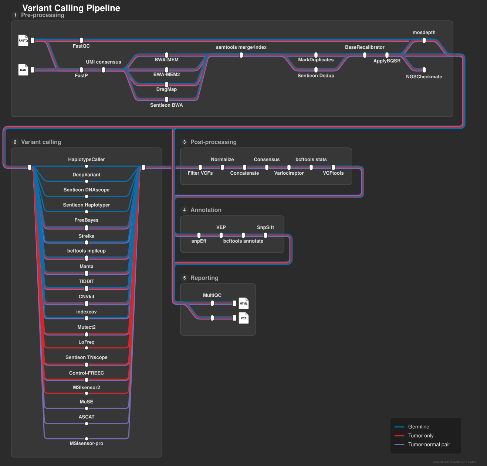
Marker Styles¶
Per-station marker shapes & fills encoding tool attributes (mandatory/optional/accelerated/expanded-elsewhere) with a marker key alongside the line legend. Demonstrates %%metro marker: and %%metro marker_legend:.
CLI command:
Mermaid source
%%metro title: Per-station marker styles
%%metro style: dark
%%metro line: germline | Germline calling | #0570b0
%%metro line: somatic | Somatic calling | #e63946
%%metro legend: bl
%% Per-station marker shapes & fills: square = mandatory, circle = optional,
%% coloured square = hardware-accelerated, pill = a step whose detail is
%% expanded in a separate panel.
%%metro marker: bwa | square, solid
%%metro marker: markdup | square, solid
%%metro marker: bqsr | square, #4CAF50
%%metro marker: haplotypecaller | square, #4CAF50
%%metro marker: mutect2 | square, #1f4e79
%%metro marker: cnvkit | pill, open
%%metro marker: vep | circle, open
%%metro marker: snpeff | circle, open
%% Marker key captions.
%%metro marker_legend: square, solid | Mandatory
%%metro marker_legend: circle, open | Optional
%%metro marker_legend: pill, open | Expanded elsewhere
%%metro marker_legend: square, #4CAF50 | Parabricks accelerated
%%metro marker_legend: square, #1f4e79 | Sentieon accelerated
graph LR
subgraph alignment [Alignment & preprocessing]
bwa[BWA-MEM]
markdup[MarkDuplicates]
bqsr[BQSR]
bwa -->|germline,somatic| markdup
markdup -->|germline,somatic| bqsr
end
subgraph calling [Variant calling & annotation]
haplotypecaller[HaplotypeCaller]
mutect2[Mutect2]
cnvkit[CNVkit]
snpeff[SnpEff]
vep[VEP]
haplotypecaller -->|germline| snpeff
mutect2 -->|somatic| vep
mutect2 -->|somatic| cnvkit
end
%% Inter-section edges
bqsr -->|germline| haplotypecaller
bqsr -->|somatic| mutect2
Rendered output:
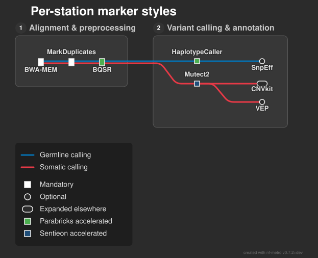
Diagonal Labels¶
Opt-in diagonal station labels via %%metro label_angle: 45: a dense pre-processing trunk whose tilted names pack tighter than horizontal labels would, feeding a variant-calling section in the row below that fans out to three callers and back in -- the reserved vertical room keeps the hanging labels clear of the row beneath.
CLI command:
Mermaid source
%%metro title: Diagonal Labels (dense trunk)
%%metro style: dark
%%metro label_angle: 45
%%metro line: germline | Germline | #0570b0
%%metro line: tumor_only | Tumor only | #d62728
%%metro line: somatic | Tumor-normal pair | #756bb1
%%metro file: fastq_in | FASTQ
%%metro file: vcf_out | VCF
%%metro grid: preprocessing | 0,0
%%metro grid: variant_calling | 0,1
graph LR
subgraph preprocessing [Pre-processing]
%%metro exit: right | germline, tumor_only, somatic
fastq_in[ ]
fastqc[FastQC]
fastp[FastP]
umi[UMI consensus]
bwa[BWA-MEM]
merge_index[samtools merge/index]
markdup[MarkDuplicates]
bqsr[BaseRecalibrator]
applybqsr[ApplyBQSR]
mosdepth[mosdepth]
ngscheckmate[NGSCheckmate]
fastq_in -->|germline,tumor_only,somatic| fastqc
fastqc -->|germline,tumor_only,somatic| fastp
fastp -->|germline,tumor_only,somatic| umi
umi -->|germline,tumor_only,somatic| bwa
bwa -->|germline,tumor_only,somatic| merge_index
merge_index -->|germline,tumor_only,somatic| markdup
markdup -->|germline,tumor_only,somatic| bqsr
bqsr -->|germline,tumor_only,somatic| applybqsr
applybqsr -->|germline,tumor_only,somatic| mosdepth
mosdepth -->|germline,tumor_only,somatic| ngscheckmate
end
subgraph variant_calling [Variant calling]
%%metro entry: left | germline, tumor_only, somatic
split[split by analysis]
deepvariant[GATK]
mutect[Mutect2]
strelka[Strelka2]
merge_vcf[merge VCFs]
vcf_out[ ]
split -->|germline| deepvariant
split -->|tumor_only| mutect
split -->|somatic| strelka
deepvariant -->|germline| merge_vcf
mutect -->|tumor_only| merge_vcf
strelka -->|somatic| merge_vcf
merge_vcf -->|germline,tumor_only,somatic| vcf_out
end
%% The dense angled-label trunk feeds the variant-calling section in the
%% row below, which fans out to three callers (one per line) and fans
%% back in at merge VCFs -- exercising the vertical room the hanging
%% angled labels need above the row below.
ngscheckmate -->|germline,tumor_only,somatic| split
Rendered output:
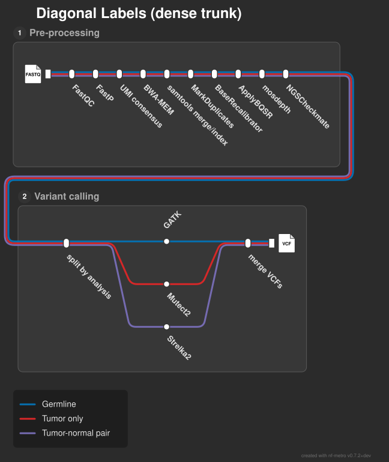
Longread Variant Calling¶
Dense long-read variant-calling pipeline (six lines, nine sections): exercises inter-section routing around non-connecting section boxes, cross-row feeds via the inter-row gap, same-line bundle coincidence, and a same-colour crossover bridge.
CLI command:
Mermaid source
%%metro title: Long-read Variant Calling
%%metro style: dark
%%metro files: fastq_in | FASTQ
%%metro files: bam_in | BAM
%%metro files: ubam_in | uBAM
%%metro line: ubam | uBAM | #0570b0
%%metro line: fastq | FASTQ | #2db572
%%metro line: bam | BAM | #f5c542
%%metro line: other | Other | #ff8c00
%%metro line: snvvcf | SNV VCF | #e63946
%%metro line: svvcf | SV VCF | #9d4edd
%%metro legend: tl
graph LR
subgraph preprocessing [Pre-processing]
fastq_in[ ]
bam_in[ ]
ubam_in[ ]
cat_fastq[cat FASTQ]
samtools_merge[samtools\nmerge]
minimap2_align[minimap2]
samtools_sort_index[samtools\nsort/index]
mosdepth[mosdepth]
fastq_in -->|fastq| cat_fastq
ubam_in -->|ubam| samtools_merge
bam_in -->|bam| samtools_merge
cat_fastq -->|fastq| minimap2_align
samtools_merge -->|ubam| minimap2_align
minimap2_align -->|bam| samtools_sort_index
samtools_merge -->|bam| samtools_sort_index
samtools_sort_index -->|bam| mosdepth
end
subgraph small_variants [Small variant calling]
clair3[Clair3]
deepvariant[Deepvariant]
end
subgraph cnv_calling [CNVs]
ontspectre_cnvcaller[ont-spectre CNVCaller]
end
subgraph tr_calling [Repeats]
longtr[LongTR]
straglr[Straglr]
trgt[TRGT]
end
subgraph phasing [Phasing]
whatshap_phase[WhatsHap Phase]
whatshap_haplotag[WhatsHap Haplotag]
whatshap_phase -->|bam,snvvcf| whatshap_haplotag
end
subgraph structural_variants [Structural Variants]
sniffles[Sniffles]
cutesv[CuteSV]
jasminesv_callers[Jasmine merge callers]
sniffles -->|svvcf,bam| jasminesv_callers
cutesv -->|svvcf,bam| jasminesv_callers
end
subgraph jointcalling [Joint Calling]
jasminesv_samples[Jasmine merge samples]
glnexus[GLNexus]
end
subgraph annotation [Annotation]
vep[VEP]
snpeff[SnpEff]
annotsv[AnnotSV]
end
subgraph reports [Reports]
geneyx[Geneyx]
sv_report[SV Report]
end
%% Inter-section edges
samtools_sort_index -->|bam| clair3
samtools_sort_index -->|bam| deepvariant
samtools_sort_index -->|bam| longtr
samtools_sort_index -->|bam| straglr
samtools_sort_index -->|bam| trgt
mosdepth -->|other| ontspectre_cnvcaller
straglr -->|other| geneyx
clair3 -->|snvvcf| ontspectre_cnvcaller
deepvariant -->|snvvcf| ontspectre_cnvcaller
clair3 -->|bam,snvvcf| whatshap_phase
deepvariant -->|bam,snvvcf| whatshap_phase
clair3 -->|snvvcf| glnexus
deepvariant -->|snvvcf| glnexus
clair3 -->|snvvcf| vep
deepvariant -->|snvvcf| vep
whatshap_haplotag -->|bam| sniffles
whatshap_haplotag -->|bam| cutesv
whatshap_haplotag -->|bam| jasminesv_samples
ontspectre_cnvcaller -->|other| geneyx
sniffles -->|svvcf| jasminesv_samples
sniffles -->|svvcf| vep
sniffles -->|svvcf| snpeff
sniffles -->|svvcf| annotsv
sniffles -->|svvcf| geneyx
cutesv -->|svvcf| jasminesv_samples
cutesv -->|svvcf| vep
cutesv -->|svvcf| snpeff
cutesv -->|svvcf| annotsv
cutesv -->|svvcf| geneyx
jasminesv_callers -->|svvcf| jasminesv_samples
jasminesv_callers -->|svvcf| vep
jasminesv_callers -->|svvcf| snpeff
jasminesv_callers -->|svvcf| annotsv
jasminesv_callers -->|svvcf| geneyx
jasminesv_callers -->|svvcf| sv_report
snpeff -->|svvcf| sv_report
annotsv -->|svvcf| sv_report
glnexus -->|snvvcf| vep
Rendered output:
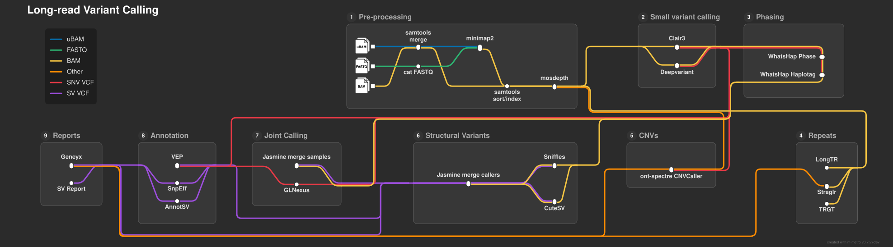
Differentialabundance¶
nf-core/differentialabundance with four input lines, off-track gene-set inputs, and a bypass-heavy reporting row. Uses %%metro center_ports: true.
CLI command:
Mermaid source
%%metro title: nf-core/differentialabundance
%%metro logo: nf-core-differentialabundance_logo_dark.png
%%metro style: dark
%%metro legend: br
%%metro line_order: definition
%%metro center_ports: true
%%metro compact_offsets: true
%%metro file: meta_in | YAML | Contrasts
%%metro file: meta_in | CSV | Samples
%%metro file: matrix_in | TSV | Matrix
%%metro file: cel_in | CEL | Affy CEL
%%metro file: mq_in | TSV | MaxQuant
%%metro file: geo_in | STR | GEO ID
%%metro file: gtf_in | GTF | GTF
%%metro file: gmt_in | GMT | Gene sets
%%metro file: net_in | TSV | Network
%%metro file: report_html | HTML | Report
%%metro file: bundle_zip | ZIP | Bundle
%%metro file: shiny_html | HTML | Shiny
%%metro file: plots_png | PNG | Plots
%%metro line: rnaseq | RNA-seq counts | #2db572
%%metro line: affy | Affymetrix microarray | #e6550d
%%metro line: maxquant | MaxQuant proteomics | #0570b0
%%metro line: geo | GEO SOFT file | #756bb1
%%metro grid: data_prep | 0,0,2,1
%%metro grid: differential | 1,0,1,1
%%metro grid: functional | 2,0,1,1
%%metro grid: reporting | 3,0,1,1
%%metro grid: plots | 2,1,1,1
%%metro off_track: gmt_in, net_in
graph LR
subgraph data_prep [Data import and preparation]
%%metro exit: right | rnaseq, affy, maxquant, geo
meta_in[ ]
matrix_in[ ]
gtf_in[ ]
cel_in[ ]
mq_in[ ]
geo_in[ ]
gtf_to_table[GTF to table]
affy_load[affy load]
proteus[proteus]
geoquery[GEOquery]
validator[Validate]
matrix_filter[Filter matrix]
meta_in -->|rnaseq,affy,maxquant,geo| validator
matrix_in -->|rnaseq| validator
gtf_in -->|rnaseq,maxquant| gtf_to_table
gtf_to_table -->|rnaseq,maxquant| validator
cel_in -->|affy| affy_load
affy_load -->|affy| validator
mq_in -->|maxquant| proteus
proteus -->|maxquant| validator
geo_in -->|geo| geoquery
geoquery -->|geo| validator
validator -->|rnaseq,affy,maxquant,geo| matrix_filter
end
subgraph differential [Differential analysis]
%%metro entry: left | rnaseq, affy, maxquant, geo
%%metro exit: right | rnaseq, affy, maxquant, geo
limma[limma]
deseq2[DESeq2]
dream[dream]
propd[propd]
annotate[Annotate results]
limma -->|rnaseq,affy| annotate
deseq2 -->|rnaseq| annotate
dream -->|rnaseq| annotate
propd -->|rnaseq| annotate
end
subgraph functional [Functional enrichment]
%%metro entry: left | rnaseq, affy, maxquant, geo
%%metro exit: right | rnaseq, affy, maxquant, geo
gmt_in[ ]
net_in[ ]
gsea[GSEA]
gprofiler2[gprofiler2]
decoupler[decoupler]
grea[grea]
gmt_in -->|rnaseq,affy,maxquant,geo| gsea
net_in -->|rnaseq,affy,maxquant,geo| decoupler
end
subgraph reporting [Reporting]
%%metro entry: left | rnaseq, affy, maxquant, geo
shinyngs[shinyngs]
quarto[Quarto report]
bundle[Zip bundle]
shiny_html[ ]
report_html[ ]
bundle_zip[ ]
shinyngs -->|rnaseq,affy,maxquant,geo| shiny_html
quarto -->|rnaseq,affy,maxquant,geo| report_html
quarto -->|rnaseq,affy,maxquant,geo| bundle
bundle -->|rnaseq,affy,maxquant,geo| bundle_zip
end
subgraph plots [Plots]
%%metro entry: left | rnaseq, affy, maxquant, geo
plot_expl[Exploratory]
plot_diff[Differential]
plots_png[ ]
plot_expl -->|rnaseq,affy,maxquant,geo| plots_png
plot_diff -->|rnaseq,affy,maxquant,geo| plots_png
end
%% Inter-section edges
matrix_filter -->|rnaseq,affy,maxquant,geo| limma
matrix_filter -->|rnaseq| deseq2
matrix_filter -->|rnaseq| dream
matrix_filter -->|rnaseq| propd
%% Section 2 -> Section 3 (functional from differential results)
limma -->|rnaseq,affy,maxquant,geo| gsea
limma -->|rnaseq,affy,maxquant,geo| gprofiler2
limma -->|rnaseq,affy,maxquant,geo| decoupler
limma -->|rnaseq| grea
%% Section 2 -> Section 4 (plots are parallel, both from differential trunk)
limma -->|rnaseq,affy,maxquant,geo| plot_expl
limma -->|rnaseq,affy,maxquant,geo| plot_diff
%% Section 2/3 -> Section 5 (reporting from differential + functional)
limma -->|rnaseq,affy,maxquant,geo| shinyngs
limma -->|rnaseq,affy,maxquant,geo| quarto
gsea -->|rnaseq,affy,maxquant,geo| quarto
gprofiler2 -->|rnaseq,affy,maxquant,geo| quarto
decoupler -->|rnaseq,affy,maxquant,geo| quarto
grea -->|rnaseq| quarto
Rendered output:
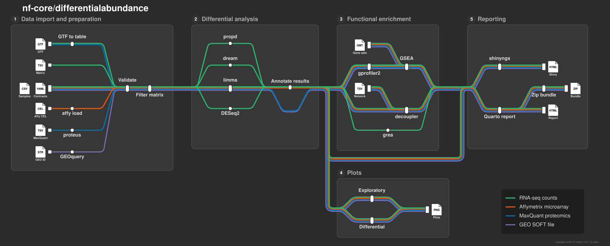
Differentialabundance Default¶
Same nf-core/differentialabundance map at default (uncentered) layout — useful for spotting regressions that only show with default port placement.
CLI command:
Mermaid source
%%metro title: nf-core/differentialabundance
%%metro logo: nf-core-differentialabundance_logo_dark.png
%%metro style: dark
%%metro legend: br
%%metro line_order: definition
%%metro compact_offsets: true
%%metro file: meta_in | YAML | Contrasts
%%metro file: meta_in | CSV | Samples
%%metro file: matrix_in | TSV | Matrix
%%metro file: cel_in | CEL | Affy CEL
%%metro file: mq_in | TSV | MaxQuant
%%metro file: geo_in | STR | GEO ID
%%metro file: gtf_in | GTF | GTF
%%metro file: gmt_in | GMT | Gene sets
%%metro file: net_in | TSV | Network
%%metro file: report_html | HTML | Report
%%metro file: bundle_zip | ZIP | Bundle
%%metro file: shiny_html | HTML | Shiny
%%metro file: plots_png | PNG | Plots
%%metro line: rnaseq | RNA-seq counts | #2db572
%%metro line: affy | Affymetrix microarray | #e6550d
%%metro line: maxquant | MaxQuant proteomics | #0570b0
%%metro line: geo | GEO SOFT file | #756bb1
%%metro grid: data_prep | 0,0,2,1
%%metro grid: differential | 1,0,1,1
%%metro grid: functional | 2,0,1,1
%%metro grid: reporting | 3,0,1,1
%%metro grid: plots | 2,1,1,1
%%metro off_track: gmt_in, net_in
graph LR
subgraph data_prep [Data import and preparation]
%%metro exit: right | rnaseq, affy, maxquant, geo
meta_in[ ]
matrix_in[ ]
gtf_in[ ]
cel_in[ ]
mq_in[ ]
geo_in[ ]
gtf_to_table[GTF to table]
affy_load[affy load]
proteus[proteus]
geoquery[GEOquery]
validator[Validate]
matrix_filter[Filter matrix]
meta_in -->|rnaseq,affy,maxquant,geo| validator
matrix_in -->|rnaseq| validator
gtf_in -->|rnaseq,maxquant| gtf_to_table
gtf_to_table -->|rnaseq,maxquant| validator
cel_in -->|affy| affy_load
affy_load -->|affy| validator
mq_in -->|maxquant| proteus
proteus -->|maxquant| validator
geo_in -->|geo| geoquery
geoquery -->|geo| validator
validator -->|rnaseq,affy,maxquant,geo| matrix_filter
end
subgraph differential [Differential analysis]
%%metro entry: left | rnaseq, affy, maxquant, geo
%%metro exit: right | rnaseq, affy, maxquant, geo
limma[limma]
deseq2[DESeq2]
dream[dream]
propd[propd]
annotate[Annotate results]
limma -->|rnaseq,affy| annotate
deseq2 -->|rnaseq| annotate
dream -->|rnaseq| annotate
propd -->|rnaseq| annotate
end
subgraph functional [Functional enrichment]
%%metro entry: left | rnaseq, affy, maxquant, geo
%%metro exit: right | rnaseq, affy, maxquant, geo
gmt_in[ ]
net_in[ ]
gsea[GSEA]
gprofiler2[gprofiler2]
decoupler[decoupler]
grea[grea]
gmt_in -->|rnaseq,affy,maxquant,geo| gsea
net_in -->|rnaseq,affy,maxquant,geo| decoupler
end
subgraph reporting [Reporting]
%%metro entry: left | rnaseq, affy, maxquant, geo
shinyngs[shinyngs]
quarto[Quarto report]
bundle[Zip bundle]
shiny_html[ ]
report_html[ ]
bundle_zip[ ]
shinyngs -->|rnaseq,affy,maxquant,geo| shiny_html
quarto -->|rnaseq,affy,maxquant,geo| report_html
quarto -->|rnaseq,affy,maxquant,geo| bundle
bundle -->|rnaseq,affy,maxquant,geo| bundle_zip
end
subgraph plots [Plots]
%%metro entry: left | rnaseq, affy, maxquant, geo
plot_expl[Exploratory]
plot_diff[Differential]
plots_png[ ]
plot_expl -->|rnaseq,affy,maxquant,geo| plots_png
plot_diff -->|rnaseq,affy,maxquant,geo| plots_png
end
%% Inter-section edges
matrix_filter -->|rnaseq,affy,maxquant,geo| limma
matrix_filter -->|rnaseq| deseq2
matrix_filter -->|rnaseq| dream
matrix_filter -->|rnaseq| propd
%% Section 2 -> Section 3 (functional from differential results)
limma -->|rnaseq,affy,maxquant,geo| gsea
limma -->|rnaseq,affy,maxquant,geo| gprofiler2
limma -->|rnaseq,affy,maxquant,geo| decoupler
limma -->|rnaseq| grea
%% Section 2 -> Section 4 (plots are parallel, both from differential trunk)
limma -->|rnaseq,affy,maxquant,geo| plot_expl
limma -->|rnaseq,affy,maxquant,geo| plot_diff
%% Section 2/3 -> Section 5 (reporting from differential + functional)
limma -->|rnaseq,affy,maxquant,geo| shinyngs
limma -->|rnaseq,affy,maxquant,geo| quarto
gsea -->|rnaseq,affy,maxquant,geo| quarto
gprofiler2 -->|rnaseq,affy,maxquant,geo| quarto
decoupler -->|rnaseq,affy,maxquant,geo| quarto
grea -->|rnaseq| quarto
Rendered output:
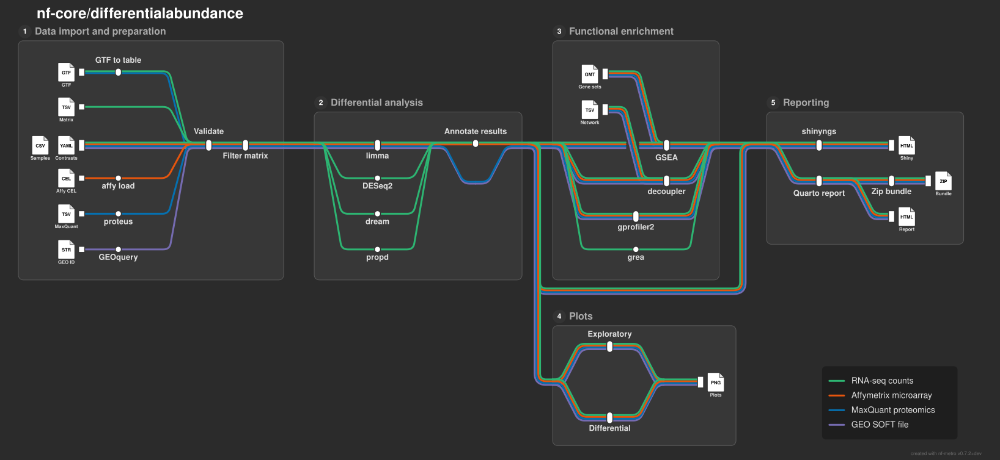
Off Track Outputs¶
Off-track file artefacts hung above a pre-processing trunk at the step that writes each one: %%metro off_track: on a producer-fed sink anchors it to its producer (not the section top), mirroring the off-track input mechanism for outputs. Each output gets its own column clear of the next station, and a step writing several files (MarkDup here) stacks them above it.
CLI command:
Mermaid source
%%metro title: Off-track outputs
%%metro line: main | Pre-processing | #3b82f6
%%metro off_track: bam_mapped, dedup_cram, recal_cram
%%metro file: bam_mapped | BAM
%%metro file: dedup_cram | CRAM
%%metro file: recal_cram | CRAM
graph LR
subgraph preprocess [Pre-processing]
fastq[FASTQ]
bwa[BWA-MEM]
convert[convert]
markdup[MarkDup]
bqsr[BQSR]
ready[Ready]
bam_mapped[ ]
dedup_cram[ ]
recal_cram[ ]
fastq -->|main| bwa
bwa -->|main| convert
bwa -->|main| markdup
convert -->|main| bqsr
markdup -->|main| bqsr
bqsr -->|main| ready
bwa -->|main| bam_mapped
markdup -->|main| dedup_cram
bqsr -->|main| recal_cram
end
Rendered output:
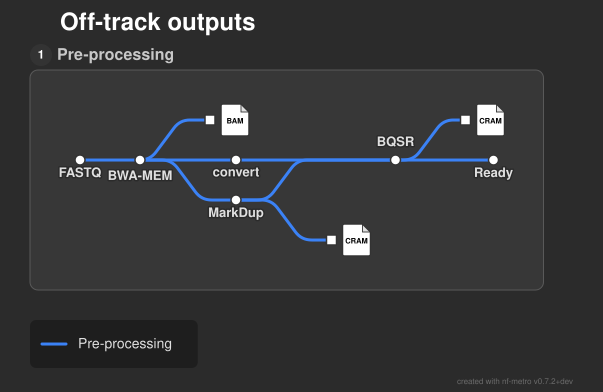
Legend Logo Placement¶
Demonstrates positioning the bundled legend+logo block: %%metro legend: br | canvas pins it to the empty lower-right canvas corner and %%metro logo_scale: enlarges the embedded logo. The directive also supports | dx,dy offsets and absolute x,y placement; the block auto-avoids sections and routes. The QC line shows a downward cross-column feeder dropping straight into its consumer section.
CLI command:
Mermaid source
%%metro title: Legend + logo placement
%%metro style: dark
%%metro logo: examples/placeholder_logo.png
%%metro logo_scale: 1.5
%%metro legend: br | canvas
%%metro file: fq_in | FASTQ
%%metro line: main | Main route | #3b82f6
%%metro line: qc | QC route | #e6842a
%%metro grid: input | 0,0
%%metro grid: trim | 1,0
%%metro grid: align | 2,0
%%metro grid: call | 3,0
%%metro grid: report | 4,0
%%metro grid: qc | 2,1
graph LR
subgraph input [Input]
%%metro exit: right | main
%%metro exit: bottom | qc
fq_in[ ]
cat[Cat FASTQ]
fq_in -->|main,qc| cat
end
subgraph trim [Trimming]
%%metro entry: left | main
%%metro exit: right | main
trimg[Trim]
end
subgraph align [Alignment]
%%metro entry: left | main
%%metro exit: right | main
bwa[BWA-MEM]
sort[Sort]
bwa -->|main| sort
end
subgraph call [Variant calling]
%%metro entry: left | main
%%metro exit: right | main
caller[Caller]
end
subgraph report [Reporting]
%%metro entry: left | main
annot[Annotate]
rep[Report]
annot -->|main| rep
end
subgraph qc [Quality control]
%%metro entry: left | qc
fastqc[FastQC]
multiqc[MultiQC]
fastqc -->|qc| multiqc
end
cat -->|main| trimg
trimg -->|main| bwa
sort -->|main| caller
caller -->|main| annot
cat -->|qc| fastqc
Rendered output:
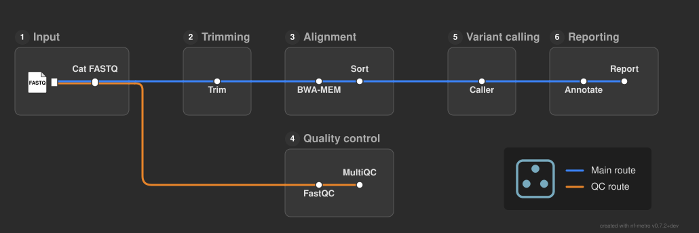
File Icons¶
Terminus icon variants: single-sheet %%metro file:, stacked %%metro files: for multiplicity, the %%metro dir: folder, and the optional | banner format strip.
CLI command:
Mermaid source
%%metro title: File Icon Variants (#532)
%%metro style: dark
%%metro line: main | Pipeline | #4CAF50
%%metro file: ref_in | FASTA | Reference
%%metro files: reads_in | FASTQ | Reads
%%metro files: aln_out | BAM | Alignments | banner
%%metro file: report_out | HTML/PDF | Report
%%metro dir: results_out | Results
graph LR
subgraph inputs [Inputs]
ref_in[ ]
reads_in[ ]
align[Align]
ref_in -->|main| align
reads_in -->|main| align
end
subgraph outputs [Outputs]
%%metro entry: left | main
collect[Collect]
aln_out[ ]
report_out[ ]
results_out[ ]
collect -->|main| aln_out
collect -->|main| report_out
collect -->|main| results_out
end
align -->|main| collect
Rendered output:
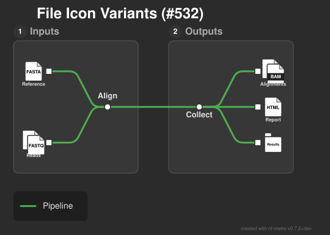
Legend Combo¶
Demonstrates %%metro legend_combo:: a normal (blue) and tumor (red) line travel together as a tumor-normal pair. The combo renders one legend row with a striped red+blue swatch. Normal travels only within the bundle so its individual row is suppressed, while tumor breaks away alone to Annotate and keeps its own row; the QC line is unaffected.
CLI command:
Mermaid source
%%metro title: Tumor-Normal Calling
%%metro style: dark
%%metro line: normal | Normal | #2196F3
%%metro line: tumor | Tumor | #E53935
%%metro line: qc | Quality Control | #4CAF50 | dashed
%%metro legend_combo: normal, tumor | Tumor-normal pair
graph LR
fastq[FASTQ]
align[Alignment]
markdup[MarkDuplicates]
bqsr[BQSR]
fastqc[FastQC]
call[Somatic Calling]
annotate[Annotate]
multiqc[MultiQC]
fastq -->|normal,tumor| align
align -->|normal,tumor| markdup
markdup -->|normal,tumor| bqsr
bqsr -->|normal,tumor| call
call -->|tumor| annotate
fastq -->|qc| fastqc
fastqc -->|qc| multiqc
Rendered output:
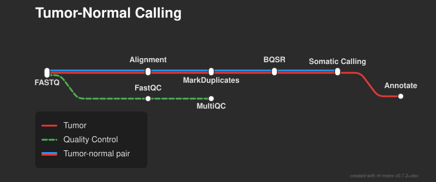
Tb File Termini¶
A %%metro direction: TB reporting section whose file outputs are line termini. Regression fixture: terminus file icons orient to a vertical flow, with the connector entering from the top.
CLI command:
Mermaid source
%%metro title: TB section file outputs
%%metro style: dark
%%metro line: rna | RNA-seq | #1f9e89
%%metro line: dna | Variant | #2c7fb8
%%metro file: report_html | HTML | Report
%%metro file: bundle_zip | ZIP | Bundle
%%metro file: multiqc_html | HTML | MultiQC
graph LR
subgraph analysis [Analysis]
align[Align]
call[Call]
align -->|rna,dna| call
end
subgraph reporting [Reporting]
%%metro direction: TB
%%metro entry: left | rna, dna
report[Build report]
bundle[Zip bundle]
multiqc[MultiQC]
report_html[ ]
bundle_zip[ ]
multiqc_html[ ]
report -->|rna,dna| report_html
report -->|rna,dna| bundle
bundle -->|rna,dna| bundle_zip
report -->|rna,dna| multiqc
multiqc -->|rna,dna| multiqc_html
end
call -->|rna,dna| report
Rendered output:
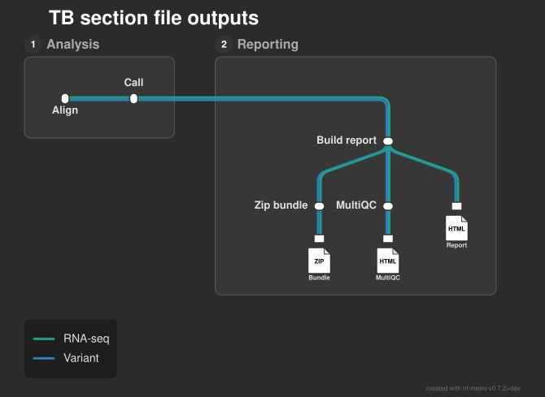
Genomeassembly Staggered¶
sanger-tol/genomeassembly with explicit %%metro grid: directives stacking each section in its own grid row. Regression fixture: cross-column junction routes were going backward in X.
CLI command:
Mermaid source
%%metro title: sanger-tol/genomeassembly
%%metro style: dark
%%metro line: long_reads | Long reads | #3d95fd
%%metro line: hic_reads | Hi-C reads | #FA6863
%%metro line: i10x_reads | 10X reads | #EB7AEB
%%metro line: assemblies | Assembly | #24B064
%%metro file: input_long_reads | FASTX
%%metro file: input_hic_reads | CRAM
%%metro file: input_10x_reads | FASTQ
%%metro grid: raw_asm | 0, 0, 2
%%metro grid: purging | 2, 2, 2
%%metro grid: polishing | 4, 4, 2
%%metro grid: scaffolding | 6, 6, 4
%%metro grid: genome_statistics | 8, 8, 4
%%metro line_order: span
%%metro compact_offsets: true
%%metro legend: bl
graph LR
subgraph raw_asm [Raw assembly]
%%metro exit: bottom | hic_reads
%%metro exit: right | assemblies,long_reads
input_long_reads[ ]
input_hic_reads[ ]
hifiasm[hifiasm]
input_long_reads -->|long_reads| hifiasm
input_hic_reads -->|hic_reads| hifiasm
end
subgraph purging [Purging]
%%metro entry: left | assemblies,long_reads
%%metro exit: right | assemblies
purging_minimap2[minimap2]
purge_dups[purge_dups]
purging_minimap2 -->|assemblies,long_reads| purge_dups
end
subgraph polishing [Polishing]
%%metro entry: left | assemblies
%%metro exit: right | assemblies
input_10x_reads[ ]
longranger[Longranger]
freebayes[FreeBayes]
input_10x_reads -->|i10x_reads| longranger
longranger -->|i10x_reads,assemblies| freebayes
end
subgraph scaffolding [Scaffolding]
%%metro entry: left | assemblies
%%metro entry: bottom | hic_reads
%%metro exit: right | assemblies
scaffolding_bwamem2[bwa-mem2]
scaffolding_minimap2[minimap2]
yahs[YaHS]
pretextmap[PretextMap]
juicer[Juicer]
cooler[Cooler]
scaffolding_bwamem2 -->|assemblies,hic_reads| yahs
scaffolding_minimap2 -->|assemblies,hic_reads| yahs
yahs -->|assemblies,hic_reads| pretextmap
yahs -->|assemblies,hic_reads| juicer
yahs -->|assemblies,hic_reads| cooler
end
subgraph genome_statistics [Genome QC]
%%metro entry: left | assemblies
asmstats[asmstats]
gfastats[GFAStats]
busco[BUSCO]
merquryfk[MerquryFK]
asmstats -->|assemblies| gfastats
asmstats -->|assemblies| busco
asmstats -->|assemblies| merquryfk
end
%% Inter-section edges
hifiasm -->|assemblies,long_reads| purging_minimap2
hifiasm -->|hic_reads| scaffolding_bwamem2
hifiasm -->|hic_reads| scaffolding_minimap2
hifiasm -->|assemblies| longranger
hifiasm -->|assemblies| scaffolding_bwamem2
hifiasm -->|assemblies| scaffolding_minimap2
purge_dups -->|assemblies| longranger
purge_dups -->|assemblies| scaffolding_bwamem2
purge_dups -->|assemblies| scaffolding_minimap2
freebayes -->|assemblies| scaffolding_bwamem2
freebayes -->|assemblies| scaffolding_minimap2
hifiasm -->|assemblies| asmstats
purge_dups -->|assemblies| asmstats
freebayes -->|assemblies| asmstats
yahs -->|assemblies| asmstats
Rendered output:
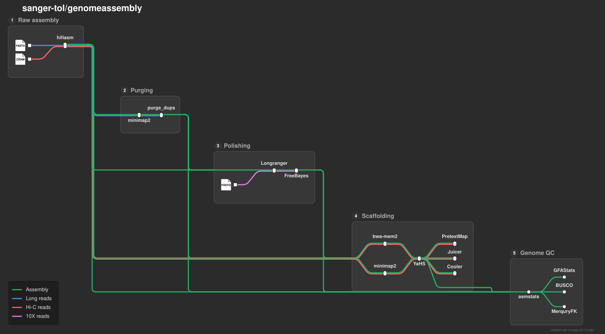
Group Labels¶
Annotative %%metro group: band captions labelling sarek-style sub-families of callers (SNPs & Indels / SV & CNV / MSI) within a single section, without splitting them apart.
CLI command:
Mermaid source
%%metro title: Variant Calling with Group Bands
%%metro style: dark
%%metro line: caller | Variant Calling | #2db572
%%metro group: SNPs & Indels | freebayes, haplotypecaller, mutect2
%%metro group: SV & CNV | manta, cnvkit
%%metro group: MSI | msisensorpro
graph LR
subgraph preprocess [Pre-processing]
markdup[MarkDuplicates]
recal[BaseRecalibrator]
markdup -->|caller| recal
end
subgraph calling [Variant Calling]
freebayes[FreeBayes]
haplotypecaller[HaplotypeCaller]
mutect2[Mutect2]
manta[Manta]
cnvkit[CNVkit]
msisensorpro[MSIsensorpro]
%% The callers sit in one horizontal row; the group bands beneath
%% caption contiguous families along the x-axis (sarek-style).
freebayes -->|caller| haplotypecaller
haplotypecaller -->|caller| mutect2
mutect2 -->|caller| manta
manta -->|caller| cnvkit
cnvkit -->|caller| msisensorpro
end
recal -->|caller| freebayes
Rendered output:
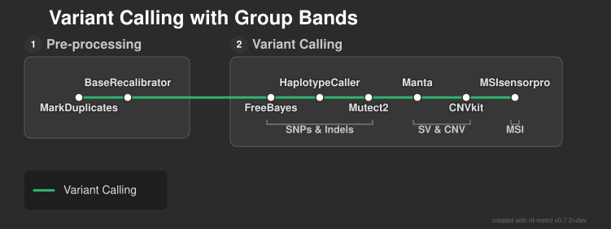
Sarek Metro¶
Integration showcase: a sarek-style variant-calling pipeline drawn with diagonal (45-degree) labels for tight column packing, an off-track FASTQ input, file termini, marker styles, and a %%metro line_spread: rails panel where each caller keeps its own rail and shared stations render as interchanges.
CLI command:
Mermaid source
%%metro title: Example analysis pathways
%%metro caption: Adapted from: Fellows Yates, James A., et al. PeerJ 9 (2021)
%%metro style: dark
%%metro logo: examples/nf-core-sarek_logo_dark.png
%%metro logo_scale: 1.0
%%metro font_scale: 1.3
%%metro legend_logo_gap: 40
%%metro legend: br
%%metro label_angle: 45
%%metro line_spread: rails | calling
%%metro grid: preprocessing | 0,0
%%metro grid: variantcalling | 1,0
%%metro grid: annotation | 2,0
%%metro grid: calling | 0,1,1,3
%%metro line: core | Core workflow | #2db572
%%metro line: germline | Germline | #0570b0
%%metro line: tumor_only | Tumor only | #d62728
%%metro line: pair_n | Tumor-normal (normal) | #0570b0
%%metro line: pair_t | Tumor-normal (tumor) | #d62728
%% Tumor-normal pair is the normal + tumor lines bundled together; give the
%% combination a single legend entry instead of two separate rows.
%%metro legend_combo: pair_n, pair_t | Tumor-normal pair
%%metro files: ubam_in | uBAM
%%metro files: spring_in | spring
%%metro files: fastq_in | FASTQ
%%metro file: vcf_ann | VCF
%%metro file: vcf_vc | VCF
%%metro files: cram_call | CRAM
%%metro file: out | VCF
%%metro file: out | TXT
%%metro files: out | ...
%% Intermediate alignment artefacts written off the trunk at the step that
%% produces them (mapping, samtools, recalibration prep, applybqsr).
%%metro files: mapped_out | BAM/CRAM
%%metro files: samtools_out | CRAM
%%metro files: recalprep_out | CRAM
%%metro files: recal_out | CRAM
%% ubam and spring need conversion, so they feed convert; fastq is already in
%% the right format and joins the trunk at FastQC, past convert. spring and
%% fastq lift off the trunk as off-track inputs with an S-curve. The bam/cram
%% outputs hang off their producer the same way (off_track anchors a sink to
%% its source).
%%metro off_track: fastq_in
%%metro off_track: spring_in
%%metro off_track: mapped_out
%%metro off_track: samtools_out
%%metro off_track: recalprep_out
%%metro off_track: recal_out
%%metro off_track: vcf_vc
%% Marker key. Optional steps use the standard station pill (undistinguished);
%% only mandatory / accelerated steps get a marker shape. Acceleration is shown
%% by fill colour: Parabricks (green), Sentieon (navy), or both (teal) on
%% whatever shape the step already carries.
%%metro marker_legend: square, solid | Mandatory
%%metro marker_legend: square, #4CAF50 | Parabricks accelerated
%%metro marker_legend: square, #1b3a6b | Sentieon accelerated
%%metro marker_legend: square, #2f7f74 | Parabricks & Sentieon accelerated
%%metro marker_legend: pill, open | Expanded in pathways panel
%% Caller families along the pathways trunk.
%%metro group: SNPs & Indels | deepvariant, freebayes, haplotypecaller, haplotyper, dnascope, tnscope, lofreq, muse, mpileup, mutect2, strelka2
%%metro group: SV & CNV | indexcov, manta, tiddit, ascat, controlfreec, cnvkit
%%metro group: MSI | msisensor2, msisensorpro
%% --- markers: mandatory steps get a square; acceleration is the fill colour.
%% mapping and markduplicates are accelerable by both Parabricks and Sentieon
%% (teal); the BQSR steps are Parabricks-only (green); the Sentieon callers in
%% the pathways panel are Sentieon-only (navy).
%%metro marker: convert | square, solid
%%metro marker: bam_convert | square, solid
%%metro marker: mapping | square, #2f7f74
%%metro marker: markduplicates | square, #2f7f74
%%metro marker: prepare_recal | circle, #4CAF50
%%metro marker: applybqsr | circle, #4CAF50
%%metro marker: vc_anchor | pill, open
%% Sentieon-accelerated callers in the pathways panel (navy circles). Single-rail
%% callers (haplotyper, dnascope) show the marker; tnscope spans two rails and
%% renders as a plain interchange (a marker on a spanning rail station is drawn
%% as the interchange bar, not the glyph).
%%metro marker: haplotyper | circle, #1b3a6b
%%metro marker: dnascope | circle, #1b3a6b
%%metro marker: tnscope | circle, #1b3a6b
graph LR
subgraph preprocessing [Pre-processing]
ubam_in[ ]
spring_in[ ]
fastq_in[ ]
convert[convert]
fastqc[FastQC]
umi[UMI]
fastp[FastP]
bbsplit[BBsplit]
mapping[mapping]
bam_convert[convert]
markduplicates[markduplicates]
mosdepth[mosdepth, samtools]
prepare_recal[prepare recalibration]
applybqsr[applybqsr]
mosdepth_qc[mosdepth, samtools]
ngscheckmate[NGSCheckmate]
mapped_out[ ]
samtools_out[ ]
recalprep_out[ ]
recal_out[ ]
ubam_in -->|core| convert
spring_in -->|core| convert
fastq_in -->|core| fastqc
convert -->|core| fastqc
fastqc -->|core| umi
umi -->|core| fastp
fastp -->|core| bbsplit
bbsplit -->|core| mapping
mapping -->|core| bam_convert
mapping -->|core| markduplicates
bam_convert -->|core| mosdepth
markduplicates -->|core| mosdepth
mosdepth -->|core| prepare_recal
prepare_recal -->|core| applybqsr
applybqsr -->|core| mosdepth_qc
mosdepth_qc -->|core| ngscheckmate
mapping -->|core| mapped_out
mosdepth -->|core| samtools_out
prepare_recal -->|core| recalprep_out
applybqsr -->|core| recal_out
end
subgraph variantcalling [Variant calling]
vc_anchor[variant calling]
bcftools[bcftools]
samtools_vc[samtools]
varlociraptor[Varlociraptor]
finalise[finalise]
normalise[normalise]
consensus[consensus]
_vc_merge[ ]
vcf_vc[ ]
vc_anchor -->|core| bcftools
bcftools -->|core| samtools_vc
samtools_vc -->|core| varlociraptor
samtools_vc -->|core| finalise
finalise -->|core| normalise
normalise -->|core| consensus
varlociraptor -->|core| _vc_merge
consensus -->|core| _vc_merge
_vc_merge -->|core| vcf_vc
end
subgraph annotation [Annotation]
snpeff[snpEff]
ensemblvep[ensemblVEP]
bcftools_annotate[bcftools annotate]
multiqc[MultiQC]
vcf_ann[ ]
snpeff -->|core| ensemblvep
ensemblvep -->|core| bcftools_annotate
bcftools_annotate -->|core| multiqc
multiqc -->|core| vcf_ann
end
subgraph calling [Example analysis pathways]
cram_call[ ]
deepvariant[DeepVariant]
freebayes[FreeBayes]
haplotypecaller[HaplotypeCaller]
haplotyper[Sentieon Haplotyper]
dnascope[Sentieon DNAscope]
tnscope[Sentieon TNscope]
lofreq[LoFreq]
muse[MuSE]
mpileup[mpileup]
mutect2[Mutect2]
strelka2[Strelka2]
indexcov[indexcov]
manta[Manta]
tiddit[TIDDIT]
ascat[ASCAT]
controlfreec[Control-FREEC]
cnvkit[CNVkit]
msisensor2[MSIsensor2]
msisensorpro[MSIsensor-pro]
out[ ]
%% Germline route (top rail): deepvariant, haplotypecaller, haplotyper,
%% dnascope are germline-only; freebayes/mpileup/strelka2/manta/tiddit/
%% cnvkit/indexcov are shared.
cram_call -->|germline| deepvariant
deepvariant -->|germline| freebayes
freebayes -->|germline| haplotypecaller
haplotypecaller -->|germline| haplotyper
haplotyper -->|germline| dnascope
dnascope -->|germline| mpileup
mpileup -->|germline| strelka2
strelka2 -->|germline| indexcov
indexcov -->|germline| manta
manta -->|germline| tiddit
tiddit -->|germline| cnvkit
cnvkit -->|germline| out
%% Tumour-only route (middle rail): tnscope, lofreq, mutect2, msisensor2
%% join here; mpileup/indexcov run tumour but not the combined pair.
cram_call -->|tumor_only| freebayes
freebayes -->|tumor_only| tnscope
tnscope -->|tumor_only| lofreq
lofreq -->|tumor_only| mpileup
mpileup -->|tumor_only| mutect2
mutect2 -->|tumor_only| indexcov
indexcov -->|tumor_only| manta
manta -->|tumor_only| tiddit
tiddit -->|tumor_only| controlfreec
controlfreec -->|tumor_only| cnvkit
cnvkit -->|tumor_only| msisensor2
msisensor2 -->|tumor_only| out
%% Tumour-normal pair route (bottom rail): muse, ascat, msisensorpro are
%% combined-only; strelka2 runs germline + combined (not tumour-only).
cram_call -->|pair_n,pair_t| freebayes
freebayes -->|pair_n,pair_t| tnscope
tnscope -->|pair_n,pair_t| muse
muse -->|pair_n,pair_t| mutect2
mutect2 -->|pair_n,pair_t| strelka2
strelka2 -->|pair_n,pair_t| manta
manta -->|pair_n,pair_t| tiddit
tiddit -->|pair_n,pair_t| ascat
ascat -->|pair_n,pair_t| controlfreec
controlfreec -->|pair_n,pair_t| cnvkit
cnvkit -->|pair_n,pair_t| msisensorpro
msisensorpro -->|pair_n,pair_t| out
end
%% Inter-section: core workflow flows through the top three sections.
ngscheckmate -->|core| vc_anchor
_vc_merge -->|core| snpeff
Rendered output:
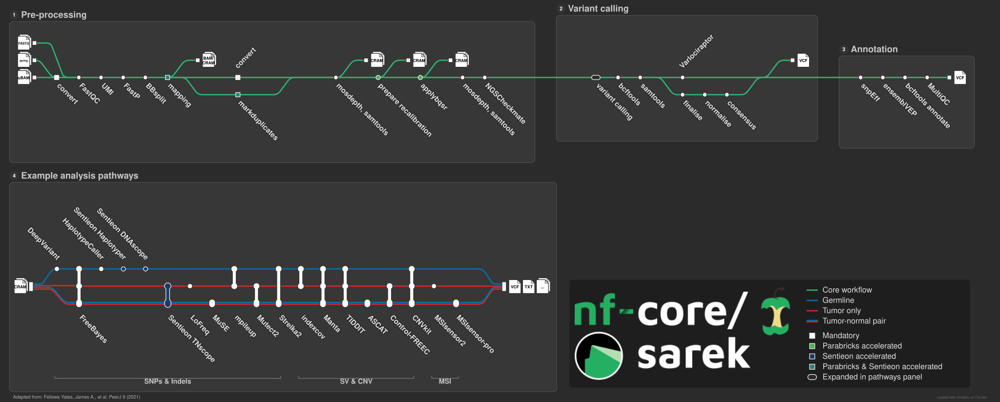
Disconnected Components¶
A connected three-section trunk plus a separate, wide disconnected section. Each weakly-connected component of the section graph is placed in its own local column grid and the components are stacked vertically, so the wide panel never inflates the trunk's columns or flings its later sections to the right.
CLI command:
Mermaid source
%%metro title: Disconnected Components
%%metro style: dark
%%metro line: main | Main Pipeline | #e63946
%%metro line: aux | Auxiliary Report | #0570b0
graph LR
subgraph ingest [Ingest]
in1[Read Input]
in2[Validate]
in1 -->|main| in2
end
subgraph process [Process]
pr1[Align]
pr2[Filter]
pr1 -->|main| pr2
end
subgraph results [Results]
re1[Summarise]
re2[Publish]
re1 -->|main| re2
end
subgraph wide_report [Standalone QC Report]
w1[Collect]
w2[Aggregate]
w3[Annotate]
w4[Normalise]
w5[Visualise]
w6[Export]
w1 -->|aux| w2
w2 -->|aux| w3
w3 -->|aux| w4
w4 -->|aux| w5
w5 -->|aux| w6
end
in2 -->|main| pr1
pr2 -->|main| re1
Rendered output:
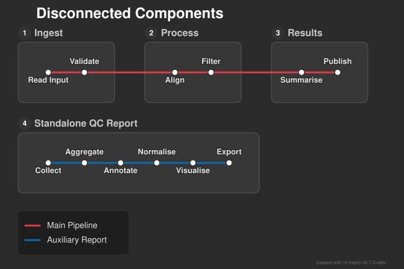
Simple Topologies¶
Single Section¶
One section, one line. The simplest possible case.
CLI command:
Mermaid source
Rendered output:
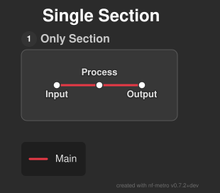
Deep Linear¶
Seven sections in a straight chain. Exercises the grid fold threshold.
CLI command:
Mermaid source
%%metro title: Deep Linear Chain
%%metro style: dark
%%metro line: main | Main | #e63946
%%metro line: alt | Alternative | #2db572
graph LR
subgraph sec1 [Input]
s1a[Read]
s1b[Validate]
s1a -->|main,alt| s1b
end
subgraph sec2 [QC]
s2a[FastQC]
s2b[MultiQC]
s2a -->|main,alt| s2b
end
subgraph sec3 [Trim]
s3a[Trim]
s3b[Filter]
s3c[Check]
s3a -->|main| s3b
s3a -->|alt| s3b
s3b -->|main,alt| s3c
end
subgraph sec4 [Align]
s4a[Index]
s4b[Map]
s4c[Sort]
s4a -->|main,alt| s4b
s4b -->|main,alt| s4c
end
subgraph sec5 [Quant]
s5a[Count]
s5b[Normalize]
s5a -->|main,alt| s5b
end
subgraph sec6 [Analysis]
s6a[Diff Expr]
s6b[Pathway]
s6c[Annotate]
s6a -->|main,alt| s6b
s6b -->|main,alt| s6c
end
subgraph sec7 [Report]
s7a[Aggregate]
s7b[Report]
s7a -->|main,alt| s7b
end
s1b -->|main,alt| s2a
s2b -->|main,alt| s3a
s3c -->|main,alt| s4a
s4c -->|main,alt| s5a
s5b -->|main,alt| s6a
s6c -->|main,alt| s7a
Rendered output:
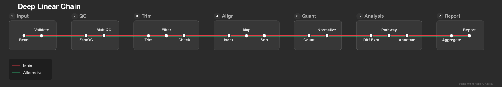
Parallel Independent¶
Two disconnected pipelines stacked vertically.
CLI command:
Mermaid source
%%metro title: Parallel Independent
%%metro style: dark
%%metro line: dna | DNA Pipeline | #e63946
%%metro line: rna | RNA Pipeline | #0570b0
graph LR
subgraph dna_input [DNA Input]
di1[Read DNA]
di2[QC DNA]
di1 -->|dna| di2
end
subgraph dna_process [DNA Process]
dp1[Align DNA]
dp2[Call Variants]
dp1 -->|dna| dp2
end
subgraph rna_input [RNA Input]
ri1[Read RNA]
ri2[QC RNA]
ri1 -->|rna| ri2
end
subgraph rna_process [RNA Process]
rp1[Align RNA]
rp2[Quantify]
rp1 -->|rna| rp2
end
di2 -->|dna| dp1
ri2 -->|rna| rp1
Rendered output:
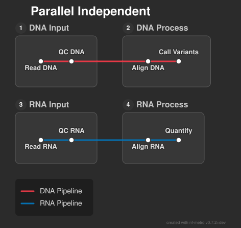
Fan-out and Fan-in¶
Wide Fan Out¶
One source fanning out to four target sections.
CLI command:
Mermaid source
%%metro title: Wide Fan-Out
%%metro style: dark
%%metro line: alpha | Alpha | #e63946
%%metro line: beta | Beta | #2db572
%%metro line: gamma | Gamma | #0570b0
%%metro line: delta | Delta | #f5c542
graph LR
subgraph source [Source]
input[Input]
process[Process]
input -->|alpha,beta,gamma,delta| process
end
subgraph target_a [Target A]
a1[Step A1]
a2[Step A2]
a1 -->|alpha| a2
end
subgraph target_b [Target B]
b1[Step B1]
b2[Step B2]
b1 -->|beta| b2
end
subgraph target_c [Target C]
c1[Step C1]
c2[Step C2]
c1 -->|gamma| c2
end
subgraph target_d [Target D]
d1[Step D1]
d2[Step D2]
d1 -->|delta| d2
end
process -->|alpha| a1
process -->|beta| b1
process -->|gamma| c1
process -->|delta| d1
Rendered output:
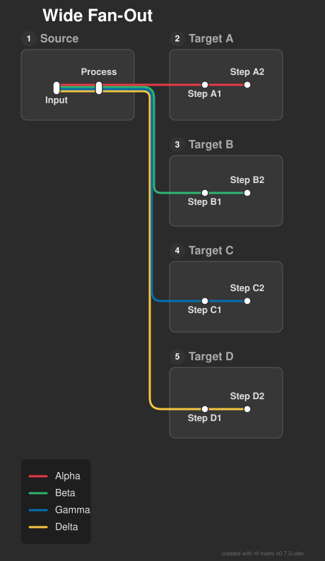
Wide Fan In¶
Four sources converging into one target section.
CLI command:
Mermaid source
%%metro title: Wide Fan-In
%%metro style: dark
%%metro line: alpha | Alpha | #e63946
%%metro line: beta | Beta | #2db572
%%metro line: gamma | Gamma | #0570b0
%%metro line: delta | Delta | #f5c542
graph LR
subgraph src_a [Source A]
a1[Step A1]
a2[Step A2]
a1 -->|alpha| a2
end
subgraph src_b [Source B]
b1[Step B1]
b2[Step B2]
b1 -->|beta| b2
end
subgraph src_c [Source C]
c1[Step C1]
c2[Step C2]
c1 -->|gamma| c2
end
subgraph src_d [Source D]
d1[Step D1]
d2[Step D2]
d1 -->|delta| d2
end
subgraph sink [Sink]
merge[Merge]
output[Output]
merge -->|alpha,beta,gamma,delta| output
end
a2 -->|alpha| merge
b2 -->|beta| merge
c2 -->|gamma| merge
d2 -->|delta| merge
Rendered output:
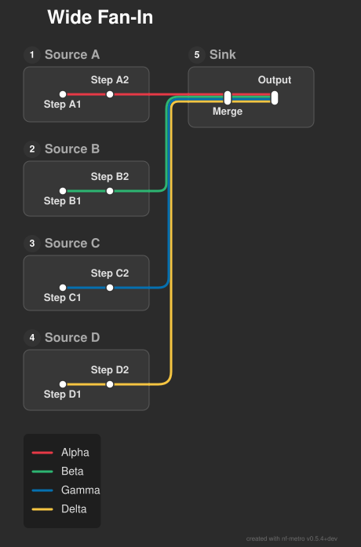
Section Diamond¶
Section-level fork-join: fan-out then reconverge.
CLI command:
Mermaid source
%%metro title: Section Diamond
%%metro style: dark
%%metro line: left_path | Left Path | #e63946
%%metro line: right_path | Right Path | #0570b0
graph LR
subgraph start [Start]
input[Input]
prep[Prepare]
input -->|left_path,right_path| prep
end
subgraph branch_left [Branch Left]
l1[Left Step 1]
l2[Left Step 2]
l3[Left Step 3]
l1 -->|left_path| l2
l2 -->|left_path| l3
end
subgraph branch_right [Branch Right]
r1[Right Step 1]
r2[Right Step 2]
r1 -->|right_path| r2
end
subgraph finish [Finish]
merge[Merge]
report[Report]
merge -->|left_path,right_path| report
end
prep -->|left_path| l1
prep -->|right_path| r1
l3 -->|left_path| merge
r2 -->|right_path| merge
Rendered output:
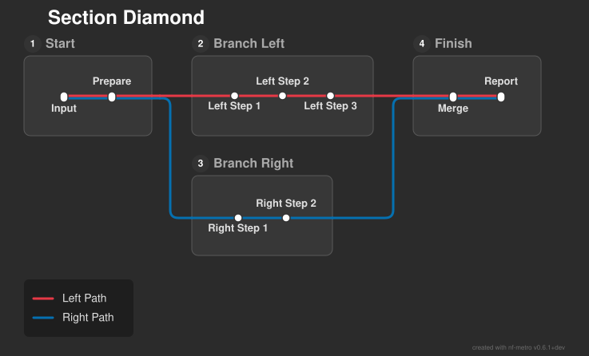
Uneven Diamond¶
Node-level fork-join whose branches differ in length; each branch holds its own track instead of collapsing the shorter ones together.
CLI command:
Mermaid source
%%metro title: Uneven fork-join diamond
%%metro line: a | A | #f0a000 | solid
%%metro line: b | B | #3a86ff | solid
%%metro line: c | C | #2bb673 | solid
graph LR
hub[Hub] -->|a| la[Leaf A]
hub -->|b| lb[Leaf B]
lb -->|b| lb2[Leaf B2]
hub -->|c| lc[Leaf C]
la -->|a| sink[Sink]
lb2 -->|b| sink
lc -->|c| sink
Rendered output:
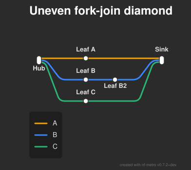
Terminal Symmetric Fan¶
A terminal section whose entry fans into equal-rank sinks; the fan stays symmetric about the entry port (regression lock for top-anchored terminal fans).
CLI command:
Mermaid source
%%metro title: Terminal Fan
%%metro style: dark
%%metro center_ports: true
%%metro line: a | A | #e63946
%%metro line: b | B | #0570b0
%%metro grid: source | 0,0
%%metro grid: reporting | 1,0
graph LR
subgraph source [Source]
s1[Input]
s2[Process]
s1 -->|a,b| s2
end
subgraph reporting [Reporting]
%%metro entry: left | a, b
shiny[Shiny]
multiqc[MultiQC]
quarto[Quarto]
end
s2 -->|a,b| shiny
s2 -->|a,b| multiqc
s2 -->|a,b| quarto
Rendered output:
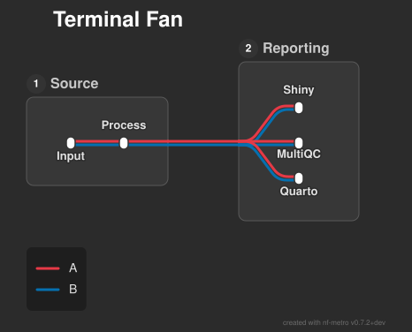
Trunk Through Fan¶
A pass-through section: the trunk runs straight through a symmetric fan-and-reconverge, exit on the merge row (regression lock for detached reconvergence exits).
CLI command:
Mermaid source
%%metro title: Trunk Through Fan
%%metro style: dark
%%metro center_ports: true
%%metro line: a | A | #e63946
%%metro line: b | B | #0570b0
%%metro grid: source | 0,0
%%metro grid: middle | 1,0
%%metro grid: sink | 2,0
graph LR
subgraph source [Source]
s1[Input]
s2[Prepare]
s1 -->|a,b| s2
end
subgraph middle [Middle]
%%metro entry: left | a, b
%%metro exit: right | a, b
split[Split]
up[Path Up]
down[Path Down]
join[Join]
split -->|a,b| up
split -->|a,b| down
up -->|a,b| join
down -->|a,b| join
end
subgraph sink [Sink]
%%metro entry: left | a, b
report[Report]
end
s2 -->|a,b| split
join -->|a,b| report
Rendered output:
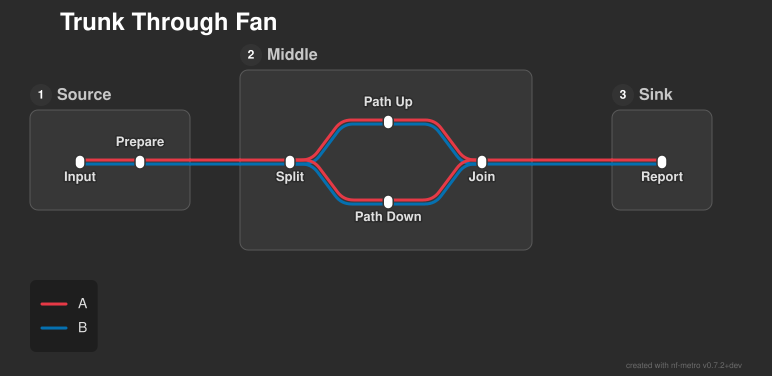
Wide Label Fan¶
A two-column fan whose station labels are wider than the column pitch; the engine wraps the labels and widens spacing so they don't collide.
CLI command:
Mermaid source
%%metro title: Wide Label Fan
%%metro style: dark
%%metro center_ports: true
%%metro line: a | A | #e63946
%%metro line: b | B | #0570b0
graph LR
subgraph proc [Reporting]
%%metro entry: left | a, b
hub[Aggregate]
align[Alignment Summary]
quant[Quantification Report]
aqc[Alignment QC HTML]
qqc[Quantification QC HTML]
hub -->|a| align
hub -->|b| quant
align -->|a| aqc
quant -->|b| qqc
end
Rendered output:
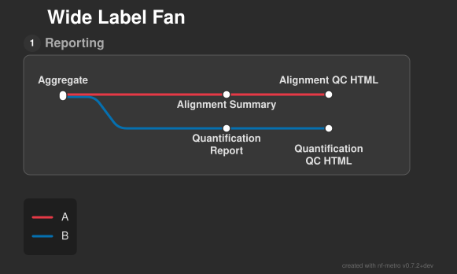
Wrapped Label Trunk¶
A wrapped station label on a lower track whose block would grow into the metro line on the track above; the label is pulled back to its un-pushed anchor so the name clears the line.
CLI command:
Mermaid source
%%metro title: Wrapped label overlaps track above
%%metro line: qc | Quality control | #f0a000 | solid
%%metro line: align | Alignment | #3a86ff | solid
%%metro line: quant | Quantification | #2bb673 | solid
graph LR
input[Samplesheet] -->|qc,align,quant| trim[Trim Galore]
trim -->|qc| fastqc[FastQC]
trim -->|align,quant| index[Genome index]
index -->|align| star[STAR]
star -->|align| sort[Samtools sort]
index -->|quant| salmon[Salmon]
fastqc -->|qc| multiqc[MultiQC]
sort -->|align| multiqc
salmon -->|quant| multiqc
Rendered output:
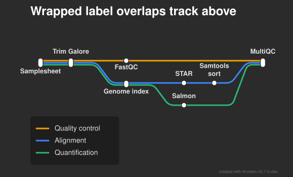
Funcprofiler Upstream¶
A profiling section whose stacked tools share a fan-in/fan-out: a line the 'FMH FunProfiler' station does not carry would rake its wide below-station label, so the label flips to its clear side and the diagonal no longer strikes the glyphs.
CLI command:
Mermaid source
%%metro title: nf-core/funcprofiler (upstream)
%%metro style: dark
%%metro line: qc | Preprocessing & QC | #4CAF50
%%metro line: concat | Merge & Concat | #2196F3
%%metro line: db | Database Prep | #607D8B
%%metro line: humann3 | HUMAnN v3 | #FF9800
%%metro line: humann4 | HUMAnN v4 | #FF5722
%%metro line: fmhfunprofiler | FMH FunProfiler | #E91E63
%%metro line: rgi | RGI | #CDDC39
%%metro line: mifaser | mifaser | #00BCD4
%%metro line: diamond | DIAMOND | #9C27B0
%%metro line: eggnog | eggNOG-mapper | #3F51B5
%%metro line: multiqc | Reporting | #795548
%%metro compact_offsets: true
graph LR
subgraph input[Input]
input_short([Short Reads])
input_dbs([Input Databases])
sr_qc(Preprocess)
merge(MERGE_RUNS)
end
subgraph profiling[Functional Profiling]
humann3(HUMAnN v3)
humann4(HUMAnN v4)
fmhfunprofiler(FMH FunProfiler)
RGI(RGI)
mifaser(mifaser)
diamond(DIAMOND)
eggnog_mapper(eggNOG-mapper)
end
subgraph QC[Quality Check]
multiqc(MultiQC)
end
subgraph Output[Output]
output([Results Directory])
end
%% DB Prep
input_dbs -->|db| humann3
input_dbs -->|db| humann4
input_dbs -->|db| fmhfunprofiler
input_dbs -->|db| RGI
input_dbs -->|db| mifaser
input_dbs -->|db| diamond
input_dbs -->|db| eggnog_mapper
%% Preprocessing
input_short -->|qc| sr_qc
sr_qc -->|concat| merge
%% Profiling split
merge -->|humann3| humann3
merge -->|humann4| humann4
merge -->|fmhfunprofiler| fmhfunprofiler
merge -->|rgi| RGI
merge -->|mifaser| mifaser
merge -->|diamond| diamond
merge -->|eggnog| eggnog_mapper
%% Reporting
sr_qc -->|multiqc| multiqc
humann3 -->|multiqc| multiqc
humann4 -->|multiqc| multiqc
fmhfunprofiler -->|multiqc| multiqc
RGI -->|multiqc| multiqc
mifaser -->|multiqc| multiqc
diamond -->|multiqc| multiqc
eggnog_mapper -->|multiqc| multiqc
%% Output
multiqc -->|multiqc| output
humann3 -->|humann3| output
humann4 -->|humann4| output
fmhfunprofiler -->|fmhfunprofiler| output
RGI -->|rgi| output
mifaser -->|mifaser| output
diamond -->|diamond| output
eggnog_mapper -->|eggnog| output
Rendered output:
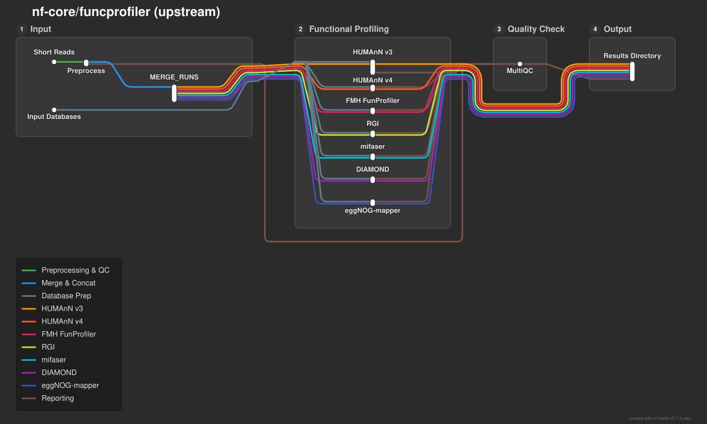
Branching and Multipath¶
Asymmetric Tree¶
One root branching into three paths of different depths.
CLI command:
Mermaid source
%%metro title: Asymmetric Tree
%%metro style: dark
%%metro line: short | Short Branch | #e63946
%%metro line: medium | Medium Branch | #2db572
%%metro line: long | Long Branch | #0570b0
graph LR
subgraph root [Root]
input[Input]
dispatch[Dispatch]
input -->|short,medium,long| dispatch
end
subgraph branch_short [Short]
s1[Quick]
s2[Result]
s1 -->|short| s2
end
subgraph branch_med_1 [Medium Step 1]
m1[Medium A]
m2[Medium B]
m1 -->|medium| m2
end
subgraph branch_med_2 [Medium Step 2]
m3[Medium C]
m4[Medium D]
m3 -->|medium| m4
end
subgraph branch_long_1 [Long Step 1]
l1[Long A]
l2[Long B]
l1 -->|long| l2
end
subgraph branch_long_2 [Long Step 2]
l3[Long C]
l4[Long D]
l3 -->|long| l4
end
subgraph branch_long_3 [Long Step 3]
l5[Long E]
l6[Long F]
l5 -->|long| l6
end
dispatch -->|short| s1
dispatch -->|medium| m1
dispatch -->|long| l1
m2 -->|medium| m3
l2 -->|long| l3
l4 -->|long| l5
Rendered output:
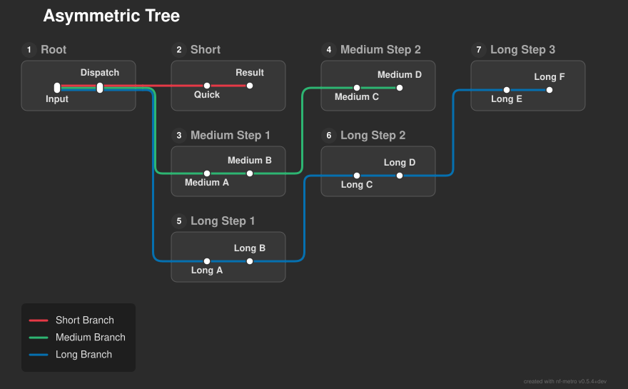
Complex Multipath¶
Four lines taking different routes through six sections.
CLI command:
Mermaid source
%%metro title: Complex Multipath
%%metro style: dark
%%metro line: fast | Fast Path | #e63946
%%metro line: standard | Standard Path | #2db572
%%metro line: detailed | Detailed Analysis | #0570b0
%%metro line: legacy | Legacy Path | #f5c542
graph LR
subgraph input_sec [Input]
raw[Raw Data]
validate[Validate]
raw -->|fast,standard,detailed,legacy| validate
end
subgraph fast_track [Fast Track]
quick_align[Quick Align]
quick_quant[Quick Quant]
quick_align -->|fast| quick_quant
end
subgraph full_preprocess [Full Pre-process]
trim[Trim]
filter[Filter]
qc_check[QC Check]
trim -->|standard,detailed,legacy| filter
filter -->|standard,detailed,legacy| qc_check
end
subgraph standard_analysis [Standard Analysis]
align[Align]
quant[Quantify]
align -->|standard,legacy| quant
end
subgraph deep_analysis [Deep Analysis]
hq_align[HQ Align]
dedup[Dedup]
hq_quant[HQ Quantify]
hq_align -->|detailed| dedup
dedup -->|detailed| hq_quant
end
subgraph output_sec [Output]
aggregate[Aggregate]
report[Report]
aggregate -->|fast,standard,detailed,legacy| report
end
validate -->|fast| quick_align
validate -->|standard,detailed,legacy| trim
qc_check -->|standard,legacy| align
qc_check -->|detailed| hq_align
quick_quant -->|fast| aggregate
quant -->|standard,legacy| aggregate
hq_quant -->|detailed| aggregate
Rendered output:
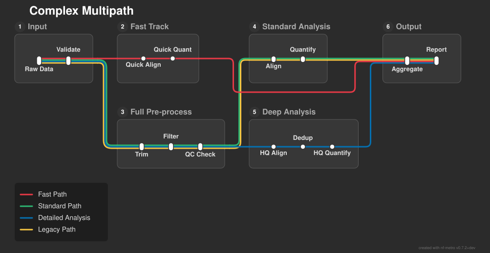
Multi-line Bundles¶
Multi Line Bundle¶
Six lines travelling through the same three-section chain.
CLI command:
Mermaid source
%%metro title: Multi-Line Bundle
%%metro style: dark
%%metro line: line1 | Line 1 | #e63946
%%metro line: line2 | Line 2 | #2db572
%%metro line: line3 | Line 3 | #0570b0
%%metro line: line4 | Line 4 | #f5c542
%%metro line: line5 | Line 5 | #ff8c00
%%metro line: line6 | Line 6 | #7b2d3b
graph LR
subgraph input_sec [Input]
raw[Raw]
qc[QC]
raw -->|line1,line2,line3,line4,line5,line6| qc
end
subgraph process_sec [Processing]
align[Align]
sort[Sort]
dedup[Dedup]
align -->|line1,line2,line3,line4,line5,line6| sort
sort -->|line1,line2,line3,line4,line5,line6| dedup
end
subgraph output_sec [Output]
quant[Quantify]
report[Report]
quant -->|line1,line2,line3,line4,line5,line6| report
end
qc -->|line1,line2,line3,line4,line5,line6| align
dedup -->|line1,line2,line3,line4,line5,line6| quant
Rendered output:
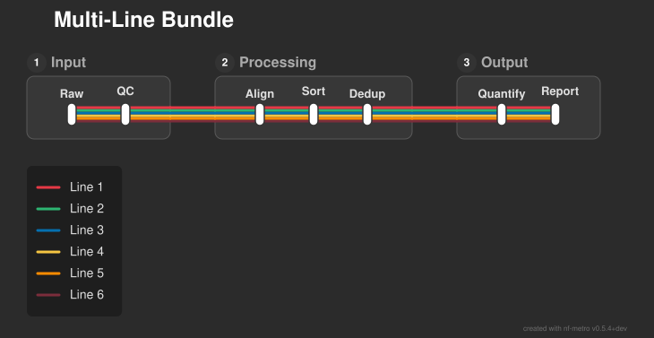
Mixed Port Sides¶
A section with both RIGHT and BOTTOM exits.
CLI command:
Mermaid source
%%metro title: Mixed Port Sides
%%metro style: dark
%%metro line: horizontal | Horizontal Flow | #e63946
%%metro line: vertical | Vertical Flow | #0570b0
graph LR
subgraph origin [Origin]
start[Start]
fork[Fork]
start -->|horizontal,vertical| fork
end
subgraph right_sec [Right Section]
r1[Right A]
r2[Right B]
r1 -->|horizontal| r2
end
subgraph bottom_sec [Bottom Section]
b1[Bottom A]
b2[Bottom B]
b1 -->|vertical| b2
end
fork -->|horizontal| r1
fork -->|vertical| b1
Rendered output:
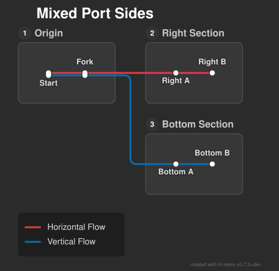
Realistic Pipelines¶
Rnaseq Lite¶
Simplified RNA-seq pipeline with three analysis routes.
CLI command:
Mermaid source
%%metro title: RNA-seq Lite
%%metro style: dark
%%metro line: star | STAR + Salmon | #2db572
%%metro line: hisat | HISAT2 | #f5c542
%%metro line: pseudo | Pseudo-alignment | #e63946
graph LR
subgraph preprocessing [Pre-processing]
input[Input]
fastqc_raw[FastQC]
fastp[FastP]
trimgalore[Trim Galore!]
fastqc_trim[FastQC]
filter[SortMeRNA]
fastqc_filt[FastQC]
input -->|star,hisat,pseudo| fastqc_raw
fastqc_raw -->|star,hisat,pseudo| fastp
fastqc_raw -->|star,hisat,pseudo| trimgalore
fastp -->|star,hisat,pseudo| fastqc_trim
trimgalore -->|star,hisat,pseudo| fastqc_trim
fastqc_trim -->|star,hisat,pseudo| filter
filter -->|star,hisat,pseudo| fastqc_filt
end
subgraph genome_align [Genome alignment]
star_align[STAR]
hisat_align[HISAT2]
umi_dedup[UMI-tools dedup]
salmon_quant[Salmon]
rsem_quant[featureCounts]
star_align -->|star| umi_dedup
hisat_align -->|hisat| umi_dedup
umi_dedup -->|star| salmon_quant
umi_dedup -->|hisat| rsem_quant
end
subgraph pseudo_align [Pseudo-alignment]
salmon_pseudo[Salmon]
tximport[tximport]
summarized_exp[Sum. Exp.]
salmon_pseudo -->|pseudo| tximport
tximport -->|pseudo| summarized_exp
end
subgraph postprocessing [Post-processing]
samtools[SAMtools]
picard[Picard]
bedtools[BEDTools]
bigwig[bedGraphToBigWig]
samtools -->|star,hisat| picard
picard -->|star,hisat| bedtools
bedtools -->|star,hisat| bigwig
end
subgraph qc_report [QC & Reporting]
rseqc[RSeQC]
dupradar[dupRadar]
featurecounts[featureCounts]
multiqc[MultiQC]
rseqc -->|star,hisat| dupradar
dupradar -->|star,hisat| featurecounts
featurecounts -->|star,hisat| multiqc
end
fastqc_filt -->|star| star_align
fastqc_filt -->|hisat| hisat_align
fastqc_filt -->|pseudo| salmon_pseudo
salmon_quant -->|star| samtools
rsem_quant -->|hisat| samtools
bigwig -->|star,hisat| rseqc
Rendered output:
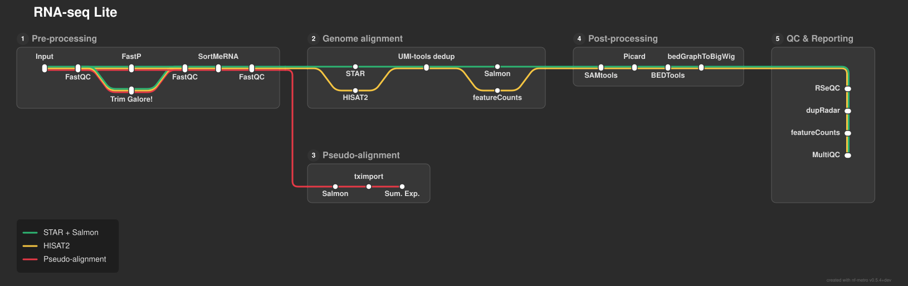
Variant Calling¶
Variant calling pipeline with four lines sharing alignment.
CLI command:
Mermaid source
%%metro title: Variant Calling Pipeline
%%metro style: dark
%%metro line: wgs | Whole Genome | #2db572
%%metro line: wes | Whole Exome | #0570b0
%%metro line: panel | Targeted Panel | #f5c542
%%metro line: rna_var | RNA Variants | #e63946
graph LR
subgraph input_qc [Input & QC]
input[Input]
fastqc[FastQC]
fastp[FastP]
trimgalore[Trim Galore!]
fastqc_trim[FastQC]
input -->|wgs,wes,panel,rna_var| fastqc
fastqc -->|wgs,wes,panel,rna_var| fastp
fastqc -->|wgs,wes,panel,rna_var| trimgalore
fastp -->|wgs,wes,panel,rna_var| fastqc_trim
trimgalore -->|wgs,wes,panel,rna_var| fastqc_trim
end
subgraph alignment [Alignment]
bwa[BWA-MEM2]
star_align[STAR]
samtools[SAMtools sort]
markdup[MarkDuplicates]
bqsr[BQSR]
bwa -->|wgs,wes,panel| samtools
star_align -->|rna_var| samtools
samtools -->|wgs,wes,panel,rna_var| markdup
markdup -->|wgs,wes,panel,rna_var| bqsr
end
subgraph dna_calling [DNA Variant Calling]
haplotypecaller[HaplotypeCaller]
deepvariant[DeepVariant]
strelka[Strelka2]
merge_vcf[Merge VCFs]
haplotypecaller -->|wgs| merge_vcf
deepvariant -->|wes| merge_vcf
strelka -->|panel| merge_vcf
end
subgraph rna_calling [RNA Variant Calling]
splitncigar[SplitNCigar]
rna_hc[HaplotypeCaller]
rna_filter[FilterVariants]
splitncigar -->|rna_var| rna_hc
rna_hc -->|rna_var| rna_filter
end
subgraph annotation [Annotation & Filtering]
vep[VEP]
snpsift[SnpSift]
filter_pass[Filter PASS]
vep -->|wgs,wes,panel,rna_var| snpsift
snpsift -->|wgs,wes,panel,rna_var| filter_pass
end
subgraph reporting [Reporting]
bcftools_stats[bcftools stats]
multiqc[MultiQC]
bcftools_stats -->|wgs,wes,panel,rna_var| multiqc
end
fastqc_trim -->|wgs,wes,panel| bwa
fastqc_trim -->|rna_var| star_align
bqsr -->|wgs| haplotypecaller
bqsr -->|wes| deepvariant
bqsr -->|panel| strelka
bqsr -->|rna_var| splitncigar
merge_vcf -->|wgs,wes,panel| vep
rna_filter -->|rna_var| vep
filter_pass -->|wgs,wes,panel,rna_var| bcftools_stats
Rendered output:
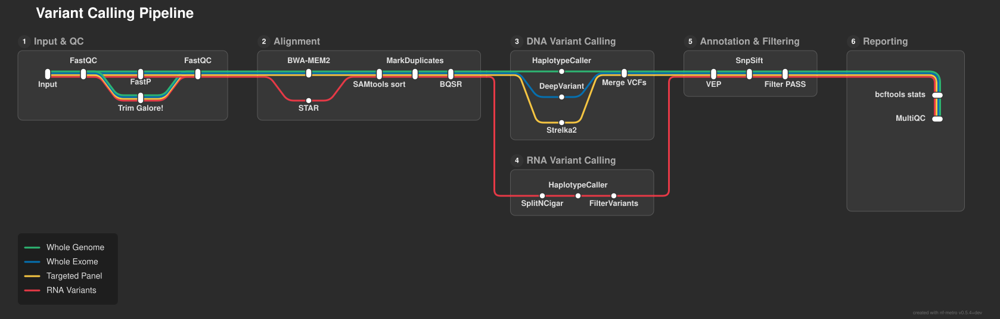
Fold Topologies¶
Fold Fan Across¶
Three lines diverge, converge at a fold, then continue on the return row.
CLI command:
Mermaid source
%%metro title: Proteomics Quantification Pipeline
%%metro style: dark
%%metro line: tmt | TMT Labeling | #e63946
%%metro line: lfq | Label-Free | #457b9d
%%metro line: dia | DIA | #2a9d8f
graph LR
subgraph sample_prep [Sample Preparation]
sp_input[Input]
sp_validate[Validate]
sp_extract[Extract]
sp_tag[Tag]
sp_filt_a[Filter A]
sp_filt_b[Filter B]
sp_merge[Merge]
sp_filter[QC Filter]
sp_qc[Final QC]
sp_input -->|tmt,lfq,dia| sp_validate
sp_validate -->|tmt,lfq,dia| sp_extract
sp_extract -->|tmt,lfq,dia| sp_tag
sp_tag -->|tmt,lfq,dia| sp_filt_a
sp_tag -->|tmt,lfq,dia| sp_filt_b
sp_filt_a -->|tmt,lfq,dia| sp_merge
sp_filt_b -->|tmt,lfq,dia| sp_merge
sp_merge -->|tmt,lfq,dia| sp_filter
sp_filter -->|tmt,lfq,dia| sp_qc
end
subgraph tmt_quant [TMT Quantification]
tmt_label[Label]
tmt_frac[Fractionate]
tmt_pool[Pool]
tmt_quant_ms[Quantify]
tmt_check[Check]
tmt_label -->|tmt| tmt_frac
tmt_frac -->|tmt| tmt_pool
tmt_pool -->|tmt| tmt_quant_ms
tmt_quant_ms -->|tmt| tmt_check
end
subgraph lfq_quant [Label-Free Quantification]
lfq_align[Align]
lfq_quant_ms[Quantify]
lfq_norm[Normalize]
lfq_align -->|lfq| lfq_quant_ms
lfq_quant_ms -->|lfq| lfq_norm
end
subgraph dia_quant [DIA Quantification]
dia_window[Window]
dia_extract[Extract]
dia_quant_ms[Quantify]
dia_window -->|dia| dia_extract
dia_extract -->|dia| dia_quant_ms
end
subgraph normalize [Normalization]
norm_input[Input]
norm_calc[Calculate]
norm_apply[Apply]
norm_input -->|tmt,lfq,dia| norm_calc
norm_calc -->|tmt,lfq,dia| norm_apply
end
subgraph stat_analysis [Statistical Analysis]
stat_merge[Merge]
diff_expr[Diff. Expression]
pathway[Pathway]
volcano[Volcano Plot]
stat_merge -->|tmt,lfq,dia| diff_expr
diff_expr -->|tmt,lfq,dia| pathway
pathway -->|tmt,lfq,dia| volcano
end
subgraph reporting [Reporting]
report_agg[Aggregate]
report_mqc[MultiQC]
report_final[Report]
report_agg -->|tmt,lfq,dia| report_mqc
report_mqc -->|tmt,lfq,dia| report_final
end
sp_qc -->|tmt| tmt_label
sp_qc -->|lfq| lfq_align
sp_qc -->|dia| dia_window
tmt_check -->|tmt| norm_input
lfq_norm -->|lfq| norm_input
dia_quant_ms -->|dia| norm_input
norm_apply -->|tmt,lfq,dia| stat_merge
volcano -->|tmt,lfq,dia| report_agg
Rendered output:
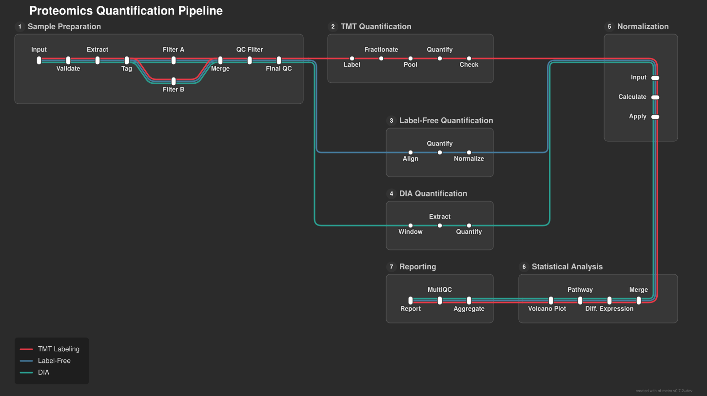
Fold Double¶
Ten-section linear pipeline with two fold points (serpentine layout).
CLI command:
Mermaid source
%%metro title: WGS/WES Variant Pipeline
%%metro style: dark
%%metro line: wgs | Whole Genome | #2db572
%%metro line: wes | Whole Exome | #0570b0
graph LR
subgraph input_qc [Input & QC]
iq_input[Input]
iq_fastqc[FastQC]
iq_trim[Trim]
iq_filter[Filter]
iq_input -->|wgs,wes| iq_fastqc
iq_fastqc -->|wgs,wes| iq_trim
iq_trim -->|wgs,wes| iq_filter
end
subgraph alignment [Alignment]
al_bwa[BWA-MEM2]
al_sort[Sort]
al_dedup[Dedup]
al_bqsr[BQSR]
al_bwa -->|wgs,wes| al_sort
al_sort -->|wgs,wes| al_dedup
al_dedup -->|wgs,wes| al_bqsr
end
subgraph base_recal [Base Recalibration]
br_recal[Recalibrate]
br_apply[Apply]
br_validate[Validate]
br_index[Index]
br_recal -->|wgs,wes| br_apply
br_apply -->|wgs,wes| br_validate
br_validate -->|wgs,wes| br_index
end
subgraph calling [Variant Calling]
vc_hc[HaplotypeCaller]
vc_genotype[Genotype]
vc_merge[Merge VCF]
vc_norm[Normalize]
vc_hc -->|wgs,wes| vc_genotype
vc_genotype -->|wgs,wes| vc_merge
vc_merge -->|wgs,wes| vc_norm
end
subgraph hard_filter [Hard Filtering]
hf_sel_snp[Select SNPs]
hf_sel_indel[Select Indels]
hf_filt_snp[Filter SNPs]
hf_filt_indel[Filter Indels]
hf_sel_snp -->|wgs,wes| hf_filt_snp
hf_filt_snp -->|wgs,wes| hf_sel_indel
hf_sel_indel -->|wgs,wes| hf_filt_indel
end
subgraph annotation [Annotation]
an_vep[VEP]
an_snpsift[SnpSift]
an_classify[Classify]
an_prioritize[Prioritize]
an_vep -->|wgs,wes| an_snpsift
an_snpsift -->|wgs,wes| an_classify
an_classify -->|wgs,wes| an_prioritize
end
subgraph interpretation [Interpretation]
ip_pathogenicity[Pathogenicity]
ip_frequency[Frequency]
ip_clinical[Clinical]
ip_aggregate[Aggregate]
ip_pathogenicity -->|wgs,wes| ip_frequency
ip_frequency -->|wgs,wes| ip_clinical
ip_clinical -->|wgs,wes| ip_aggregate
end
subgraph integration [Integration]
ig_merge[Merge Calls]
ig_validate[Validate]
ig_qc[QC Check]
ig_finalize[Finalize]
ig_merge -->|wgs,wes| ig_validate
ig_validate -->|wgs,wes| ig_qc
ig_qc -->|wgs,wes| ig_finalize
end
subgraph reporting [Reporting]
rp_summary[Summary]
rp_multiqc[MultiQC]
rp_report[Report]
rp_summary -->|wgs,wes| rp_multiqc
rp_multiqc -->|wgs,wes| rp_report
end
subgraph archival [Archival]
ar_archive[Archive]
ar_compress[Compress]
ar_archive -->|wgs,wes| ar_compress
end
iq_filter -->|wgs,wes| al_bwa
al_bqsr -->|wgs,wes| br_recal
br_index -->|wgs,wes| vc_hc
vc_norm -->|wgs,wes| hf_sel_snp
hf_filt_indel -->|wgs,wes| an_vep
an_prioritize -->|wgs,wes| ip_pathogenicity
ip_aggregate -->|wgs,wes| ig_merge
ig_finalize -->|wgs,wes| rp_summary
rp_report -->|wgs,wes| ar_archive
Rendered output:
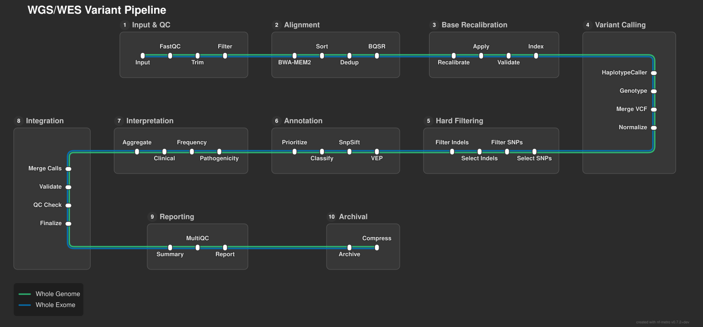
Fold Stacked Branch¶
Stacked analysis sections feeding through a fold into branching targets.
CLI command:
Mermaid source
%%metro title: Single-Cell Multi-Omics Pipeline
%%metro style: dark
%%metro line: rna | scRNA-seq | #e63946
%%metro line: atac | scATAC-seq | #457b9d
%%metro line: protein | CITE-seq | #f5c542
graph LR
subgraph preprocessing [Preprocessing]
pp_input[Input]
pp_demux[Demux]
pp_qc_raw[Raw QC]
pp_trim[Trim]
pp_filter[Filter]
pp_qc_clean[Clean QC]
pp_classify[Classify]
pp_sort[Sort]
pp_input -->|rna,atac,protein| pp_demux
pp_demux -->|rna,atac,protein| pp_qc_raw
pp_qc_raw -->|rna,atac,protein| pp_trim
pp_trim -->|rna,atac,protein| pp_filter
pp_filter -->|rna,atac,protein| pp_qc_clean
pp_qc_clean -->|rna,atac,protein| pp_classify
pp_classify -->|rna,atac,protein| pp_sort
end
subgraph rna_analysis [RNA Analysis]
rna_norm[Normalize]
rna_cluster[Cluster]
rna_markers[Markers]
rna_trajectories[Trajectories]
rna_dge[DGE]
rna_norm -->|rna| rna_cluster
rna_cluster -->|rna| rna_markers
rna_markers -->|rna| rna_trajectories
rna_trajectories -->|rna| rna_dge
end
subgraph atac_analysis [ATAC Analysis]
atac_peaks[Peak Calling]
atac_motif[Motif Analysis]
atac_footprint[Footprinting]
atac_coverage[Coverage]
atac_peaks -->|atac| atac_motif
atac_motif -->|atac| atac_footprint
atac_footprint -->|atac| atac_coverage
end
subgraph protein_analysis [Protein Analysis]
prot_norm[Normalize]
prot_quant[Quantify]
prot_viz[Visualize]
prot_norm -->|protein| prot_quant
prot_quant -->|protein| prot_viz
end
subgraph integration [Multi-Modal Integration]
int_merge[Merge Modalities]
int_wnn[WNN]
int_umap[UMAP]
int_merge -->|rna,atac,protein| int_wnn
int_wnn -->|rna,atac,protein| int_umap
end
subgraph bio_interp [Biological Interpretation]
bio_celltype[Cell Typing]
bio_trajectory[Trajectory]
bio_grn[Gene Reg. Network]
bio_celltype -->|rna,atac| bio_trajectory
bio_trajectory -->|rna,atac| bio_grn
end
subgraph tech_qc [Technical QC]
tqc_doublet[Doublet Detection]
tqc_ambient[Ambient RNA]
tqc_metrics[QC Metrics]
tqc_doublet -->|protein| tqc_ambient
tqc_ambient -->|protein| tqc_metrics
end
subgraph final_report [Final Report]
fr_aggregate[Aggregate]
fr_report[Render Report]
fr_aggregate -->|rna,atac,protein| fr_report
end
pp_sort -->|rna| rna_norm
pp_sort -->|atac| atac_peaks
pp_sort -->|protein| prot_norm
rna_dge -->|rna| int_merge
atac_coverage -->|atac| int_merge
prot_viz -->|protein| int_merge
int_umap -->|rna,atac| bio_celltype
int_umap -->|protein| tqc_doublet
bio_grn -->|rna,atac| fr_aggregate
tqc_metrics -->|protein| fr_aggregate
Rendered output:
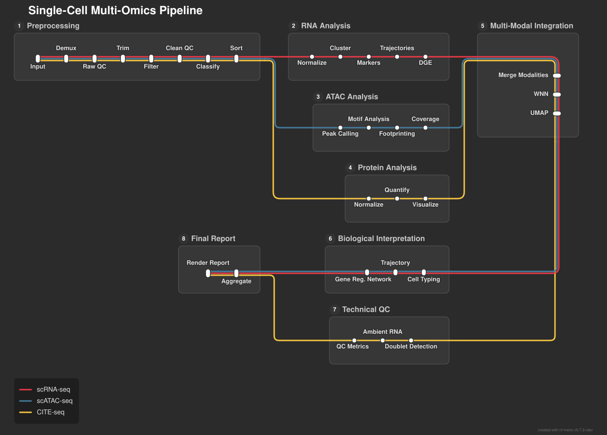
Stacked Lr Serpentine¶
Same-direction sections stacked in one grid column, chained via short vertical drops on alternating sides (serpentine), no wrap-around.
CLI command:
Mermaid source
%%metro title: Stacked LR Serpentine
%%metro style: dark
%%metro line: main | Main | #e63946
%%metro grid: ingest | 0,0,3,1
%%metro grid: align | 1,0,1,1
%%metro grid: dedup | 1,1,1,1
%%metro grid: call | 1,2,1,1
graph LR
subgraph ingest [Ingest]
i1[Read]
i2[QC]
i1 -->|main| i2
end
subgraph align [Alignment]
a1[Map]
a2[Sort]
a1 -->|main| a2
end
subgraph dedup [Dedup]
d1[Mark Dup]
d2[Recalibrate]
d1 -->|main| d2
end
subgraph call [Variant Calling]
c1[Call]
c2[Filter]
c1 -->|main| c2
end
i2 -->|main| a1
a2 -->|main| d1
d2 -->|main| c1
Rendered output:
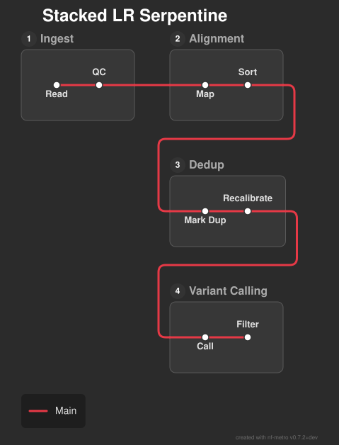
Bypass Fan In Outer Slot¶
A bypass line (QC) skips hub and alignment to reach a deeper station (MultiQC Report) in the Integration section, while dna/meth/rna/atac converge at a fan-in entry port. The bypass line claims the outer slot so no empty interior gaps appear (issue #655).
CLI command:
Mermaid source
%%metro title: Bypass Fan-in Outer Slot
%%metro style: dark
%%metro line: dna | DNA | #e63946
%%metro line: meth | Methylation | #0570b0
%%metro line: rna | RNA | #2db572
%%metro line: atac | ATAC | #f5c542
%%metro line: qc | QC | #ff8c00
graph LR
subgraph ingest [Ingest]
samplesheet[Samplesheet]
demux[Demultiplex]
samplesheet -->|dna,meth,rna,atac,qc| demux
end
subgraph trim [Trim & QC]
fastp[Fastp]
screen[Contam Screen]
fastp -->|dna,meth,rna,atac,qc| screen
end
subgraph hub [Branch Hub]
dispatch[Dispatch]
end
subgraph align_right [Alignment]
bwa[BWA-MEM]
markdup[MarkDup]
bwa -->|dna,meth| markdup
end
subgraph quant_bottom [Quantification]
salmon[Salmon]
tximport[Tximport]
salmon -->|rna| tximport
end
subgraph peaks_bottom [Peak Calling]
macs[MACS2]
macs -->|atac| macs2anno[Annotate Peaks]
end
subgraph integrate [Integration]
mofa[MOFA Factor Model]
report[MultiQC Report]
mofa -->|dna,meth,rna,atac| report
end
demux -->|dna,meth,rna,atac,qc| fastp
screen -->|dna,meth,rna,atac,qc| dispatch
dispatch -->|dna,meth| bwa
dispatch -->|rna| salmon
dispatch -->|atac| macs
markdup -->|dna,meth| mofa
tximport -->|rna| mofa
macs2anno -->|atac| mofa
screen -->|qc| report
Rendered output:
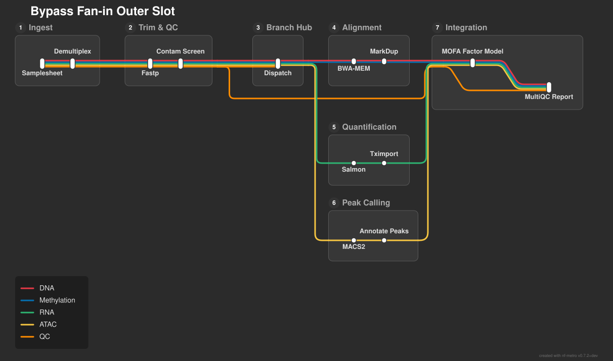
Mismatched Tracks¶
Lines with mismatched track counts at shared stations.
CLI command:
Mermaid source
%%metro title: Mismatched Tracks
%%metro style: dark
%%metro line: a | Alpha | #0570b0
%%metro line: b | Beta | #2db572
%%metro line: c | Gamma | #e31a1c
%%metro line: d | Delta | #ff7f00
%%metro line: e | Epsilon | #6a3d9a
graph LR
subgraph tall [Tall Section]
t_start[Start]
t_a[Path A]
t_b[Path B]
t_c[Path C]
t_d[Path D]
t_e[Path E]
t_end[End]
t_start -->|a| t_a
t_start -->|b| t_b
t_start -->|c| t_c
t_start -->|d| t_d
t_start -->|e| t_e
t_a -->|a| t_end
t_b -->|b| t_end
t_c -->|c| t_end
t_d -->|d| t_end
t_e -->|e| t_end
end
subgraph short_a [Short A]
sa1[Proc A]
sa2[Done A]
sa1 -->|a| sa2
end
subgraph short_b [Short B]
sb1[Proc B]
sb2[Done B]
sb1 -->|b| sb2
end
t_end -->|a| sa1
t_end -->|b| sb1
Rendered output:
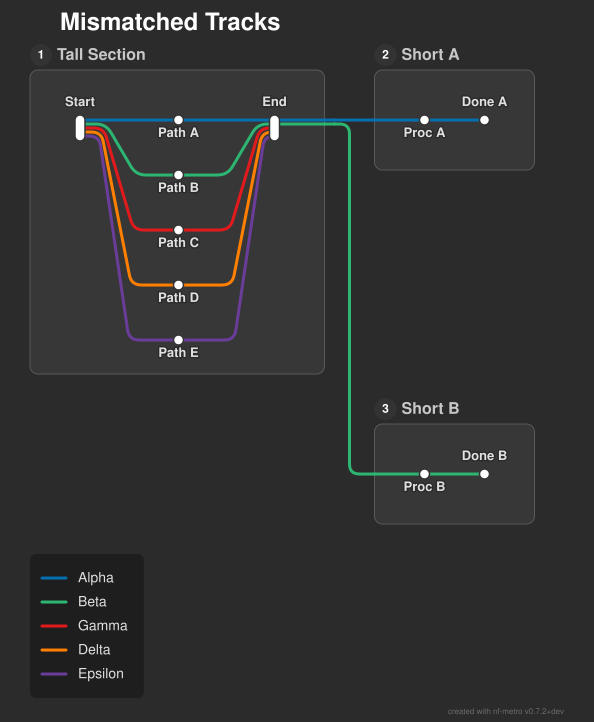
Upward Bypass¶
Tall section bypass where the trunk is above the source (upward gap1).
CLI command:
Mermaid source
%%metro title: Upward Bypass Test
%%metro style: dark
%%metro line: a | Line A | #FF9800
%%metro line: b | Line B | #4CAF50
%%metro line: c | Line C | #2196F3
%%metro line: d | Line D | #E91E63
%%metro line: e | Line E | #9C27B0
%%metro line: f | Line F | #00BCD4
%%metro line: g | Line G | #CDDC39
graph LR
subgraph input [Input]
hub[Hub]
end
subgraph wide [Wide Fan-out]
w1[Tool 1]
w2[Tool 2]
w3[Tool 3]
w4[Tool 4]
w5[Tool 5]
w6[Tool 6]
w7[Tool 7]
end
subgraph adjacent [Adjacent]
adj[Collect]
end
subgraph far [Far Target]
out[Output]
end
hub -->|a| w1
hub -->|b| w2
hub -->|c| w3
hub -->|d| w4
hub -->|e| w5
hub -->|f| w6
hub -->|g| w7
%% Adjacent (L-shape)
w1 -->|a| adj
%% Bypass: bottom of wide -> far (skipping adjacent)
w1 -->|a| out
w2 -->|b| out
w3 -->|c| out
w4 -->|d| out
w5 -->|e| out
w6 -->|f| out
w7 -->|g| out
adj -->|a| out
Rendered output:
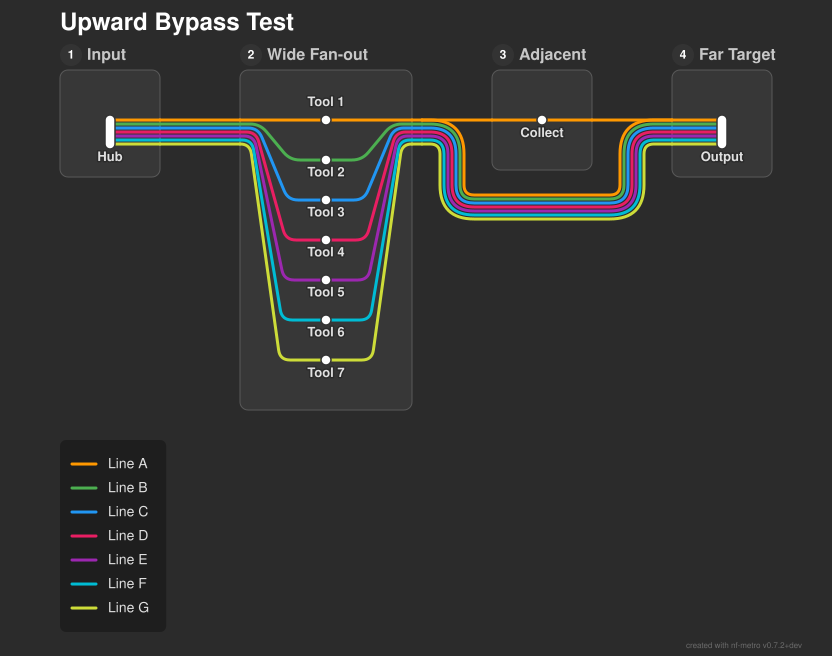
Bypass Label Rake¶
A foreign line dips below a station to bypass its marker, then climbs back to the trunk past the wide 'Quantification' label. The router lengthens the dip's flat run so the climb seats clear of the glyphs (_clear_bypass_v_label_strikes).
CLI command:
Mermaid source
%%metro title: Bypass V Past A Wide Label
%%metro style: dark
%%metro line: dna | DNA | #e63946
%%metro line: rna | RNA | #0570b0
%%metro line: prot | Protein | #2db572
graph LR
subgraph input [Input]
fetch[Fetch Data]
validate[Validate]
fetch -->|dna,rna,prot| validate
end
subgraph processing [Processing]
branch[Branch]
align[Alignment]
quant[Quantification]
search[Database Search]
branch -->|dna,rna| align
branch -->|prot| search
align -->|rna| quant
end
subgraph reporting [Reporting]
multiqc[MultiQC]
end
validate -->|dna,rna,prot| branch
align -->|dna| multiqc
quant -->|rna| multiqc
search -->|prot| multiqc
Rendered output:
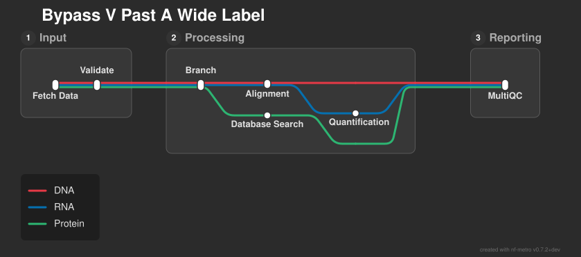
Bypass V Tight¶
An intra-section bypass V at a tight column pitch: without room for a lead-in the descent would diverge on the 'Process A' marker and rake its label. The engine pushes the bypassed node to a further grid column so the V diverges past the label and keeps a visible flat run through its X (issue #688).
CLI command:
Mermaid source
%%metro title: Bypass V Tight
%%metro style: dark
%%metro x_spacing: 50
%%metro line: a | Line A | #FF9800
%%metro line: b | Line B | #4CAF50
graph LR
subgraph src [Source]
s1[Start]
end
subgraph mid [Mid]
%%metro exit: right | a,b
m1[Process A]
m2[Transform]
m1 -->|a| m2
end
subgraph dest [Dest]
d1[End]
end
s1 -->|a,b| m1
m2 -->|a| d1
m1 -->|b| d1
Rendered output:
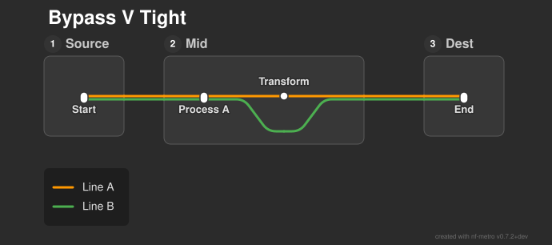
Fan Bypass Nesting¶
A junction fans to a straight continuation, three down-turns into stacked rows, and one far-column bypass. The bypass joins the same concentric corner as the down-turns and descends in the shared channel, peeling into its lane at the inter-row gap rather than grazing the down-turn corners near the junction (issue #652).
CLI command:
Mermaid source
%%metro title: Fan-out + bypass nesting
%%metro line: dna | DNA | #2db572
%%metro line: rna | RNA | #e63946
%%metro line: qc | QC | #f4a261
graph LR
subgraph src [Source]
s_in[In]
s_hub[Hub]
s_in -->|dna,rna,qc| s_hub
end
subgraph straight [Straight]
st_a[A]
st_b[B]
st_a -->|dna| st_b
end
subgraph down1 [Down 1]
d1_a[C1]
d1_b[C2]
d1_a -->|dna| d1_b
end
subgraph down2 [Down 2]
d2_a[E1]
d2_b[E2]
d2_a -->|rna| d2_b
end
subgraph down3 [Down 3]
d3_a[F1]
d3_b[F2]
d3_a -->|rna| d3_b
end
subgraph mid [Mid]
m_a[M1]
m_b[M2]
m_a -->|dna,rna| m_b
end
subgraph sink [Report]
rp_a[R1]
rp_b[R2]
rp_a -->|dna,rna,qc| rp_b
end
s_hub -->|dna| st_a
s_hub -->|dna| d1_a
s_hub -->|rna| d2_a
s_hub -->|rna| d3_a
s_hub -->|qc| rp_a
d1_b -->|dna| m_a
d2_b -->|rna| m_a
d3_b -->|rna| m_a
m_b -->|dna,rna| rp_a
Rendered output:
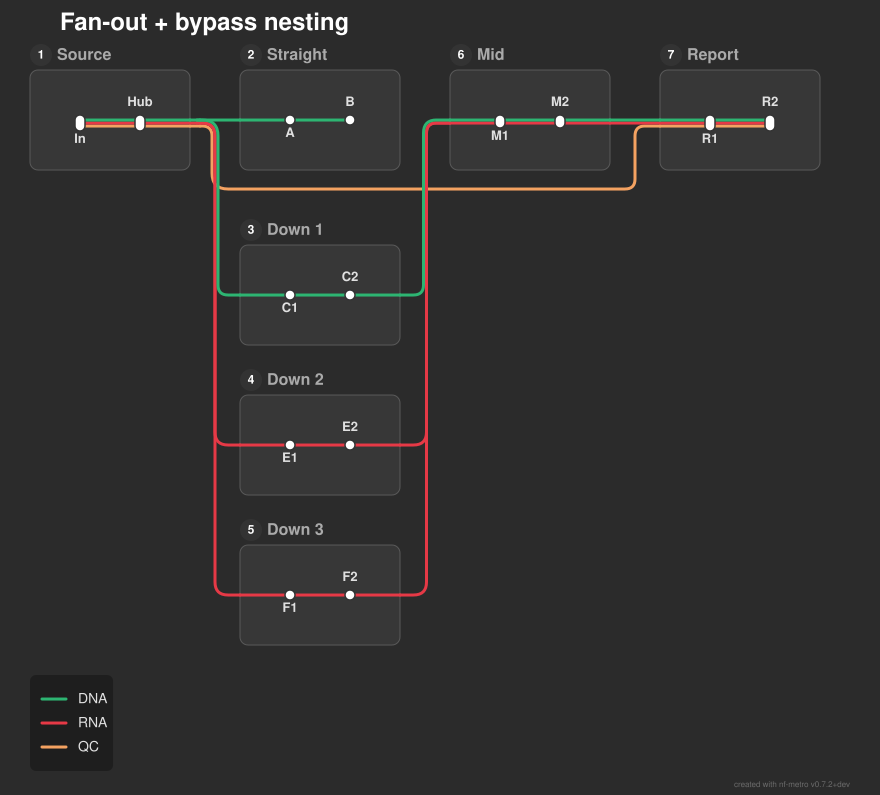
Divergent Fanout Split¶
One line fans out from a single source to a near and a far target in the row below. The two descents stay fused as one trunk until the near branch turns off, so the farther branch never peels onto the inside of the nearer one and crosses it (issue #702).
CLI command:
Mermaid source
%%metro title: Divergent Fanout Split
%%metro style: dark
%%metro line: main | Main | #0570b0
%%metro grid: src | 0,0
%%metro grid: nearrow | 1,1
%%metro grid: farrow | 2,1
graph LR
subgraph src [Source]
%%metro exit: right | main
s1[Input]
s2[Process]
s1 -->|main| s2
end
subgraph nearrow [Near Target]
%%metro entry: left | main
n1[NearStep]
end
subgraph farrow [Far Target]
%%metro entry: left | main
f1[Collect]
f2[Report]
f1 -->|main| f2
end
s2 -->|main| n1
s2 -->|main| f1
Rendered output:
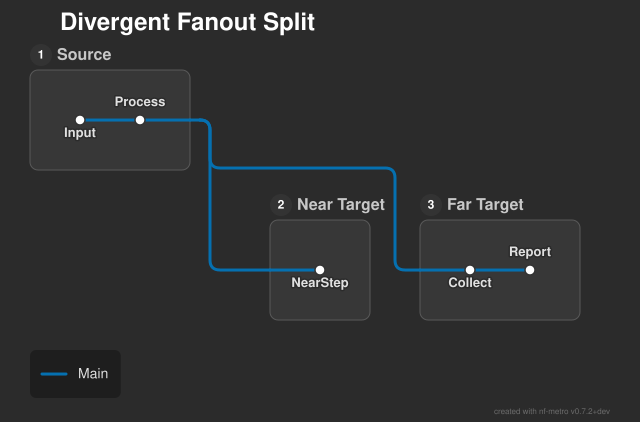
Disjoint Sameline Trunks¶
Two lines diving into one below-row channel to bypass a section ride a tight concentric bundle until a member peels up at its turn column, rather than being split apart by a track reserved for a trunk that only appears further along the channel (issue #702).
CLI command:
Mermaid source
%%metro title: Disjoint Same-Line Bypass Trunks
%%metro style: dark
%%metro line: a | Line A | #e63946
%%metro line: b | Line B | #2db572
%%metro line: c | Line C | #0570b0
%%metro grid: secA | 0,0
%%metro grid: secB | 1,0
%%metro grid: secC | 2,0
%%metro grid: secD | 3,0
%%metro grid: secE | 4,0
graph LR
subgraph secA [Ingest]
%%metro exit: right | a, b, c
a_node[Input]
end
subgraph secB [QC]
%%metro entry: left | b
%%metro exit: right | b
b_node[QC Step]
end
subgraph secC [Align]
%%metro entry: left | a, b
%%metro exit: right | a, b
c_node[Align]
end
subgraph secD [Call]
%%metro entry: left | c
%%metro exit: right | c
d_node[Call]
end
subgraph secE [Report]
%%metro entry: left | a, b, c
e_node[Report]
end
a_node -->|b| b_node
a_node -->|a| c_node
a_node -->|c| d_node
b_node -->|b| c_node
c_node -->|a,b| e_node
d_node -->|c| e_node
Rendered output:
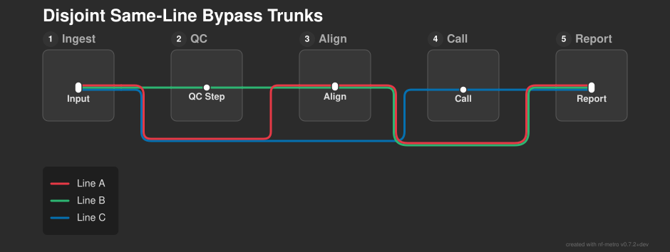
Dogleg Exempt Distinct¶
A bypass line cleared off a different line's exempt wrap trunk in the inter-row gap runs parallel above it as a tight bundle, rather than doglegging onto the crossing side where its riser would pierce the wrap run twice (issue #702).
CLI command:
Mermaid source
%%metro title: Dogleg Off Exempt Trunks - Distinct Line Regime
%%metro style: dark
%%metro line: wrap | Wrap | #0570b0
%%metro line: byp | Bypass | #e63946
%%metro line: skip | Skip | #2ca02c
%%metro grid: left_tgt | 0,0
%%metro grid: right_src | 1,1
%%metro grid: bot_sink | 2,1
%%metro grid: skip_src | 0,1
graph LR
subgraph left_tgt [Left Target]
%%metro entry: left | wrap
lt1[Collect]
lt2[Output]
lt1 -->|wrap| lt2
end
subgraph right_src [Right Source]
rs1[Input R]
rs2[Hub R]
rs1 -->|wrap| rs2
end
subgraph bot_sink [Bottom Sink]
bs1[Collect B]
bs2[Output B]
bs1 -->|byp| bs2
end
subgraph skip_src [Skip Source]
ss1[Step S]
ss2[Out S]
ss1 -->|skip| ss2
end
rs2 -->|wrap| lt1
lt2 -->|byp| bs1
ss2 -->|skip| bs1
Rendered output:
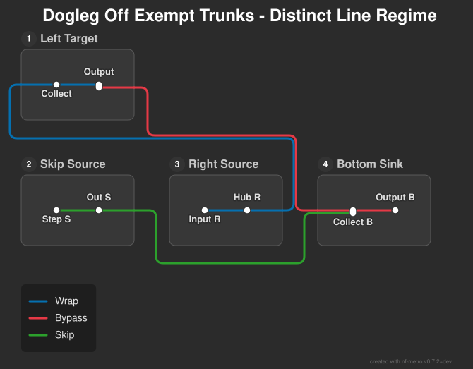
Off Track Convergence¶
Multiple off-track file inputs converging on a single consumer. The trunk stays horizontal while the inputs stack above the consumer column.
CLI command:
Mermaid source
%%metro title: Off-Track Convergence
%%metro style: dark
%%metro line: main | Main | #2db572
%%metro file: ref_in | FASTA | Reference
%%metro file: gtf_in | GTF | Annotation
%%metro file: vcf_in | VCF | Known Variants
%%metro file: bed_in | BED | Targets
%%metro off_track: ref_in, gtf_in, vcf_in, bed_in
graph LR
subgraph input [Input]
reads[Reads]
prep[Prepare]
reads -->|main| prep
end
subgraph process [Process]
ref_in[ ]
gtf_in[ ]
vcf_in[ ]
bed_in[ ]
align[Align]
annotate[Annotate]
ref_in -->|main| align
gtf_in -->|main| align
vcf_in -->|main| align
bed_in -->|main| align
align -->|main| annotate
end
subgraph output [Output]
report[Report]
end
prep -->|main| align
annotate -->|main| report
Rendered output:
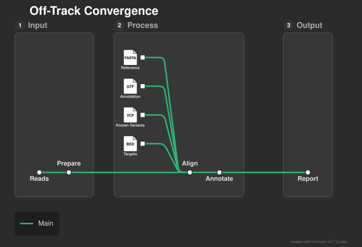
Off Track Convergence Multiline¶
A multi-line bundle enters a section and converges on a deep first station that also consumes off-track file inputs. The consumer stays on the section trunk, level with its continuation, rather than being dragged to the section floor (issue #650).
CLI command:
nf-metro render examples/topologies/off_track_convergence_multiline.mmd -o off_track_convergence_multiline.svg
Mermaid source
%%metro title: Off-Track Convergence Multiline
%%metro style: dark
%%metro line: dna | DNA | #2db572
%%metro line: rna | RNA | #e63946
%%metro line: qc | QC | #f4a261
%%metro file: ref_in | FASTA | Reference
%%metro file: gtf_in | GTF | Annotation
%%metro off_track: ref_in, gtf_in
graph LR
subgraph input [Input]
reads[Reads]
prep[Prepare]
reads -->|dna,rna,qc| prep
end
subgraph process [Process]
ref_in[ ]
gtf_in[ ]
align[Align]
sort[Sort]
index[Index]
ref_in -->|dna,rna| align
gtf_in -->|rna| align
align -->|dna,rna,qc| sort
sort -->|dna,rna,qc| index
end
subgraph output [Output]
report[Report]
end
prep -->|dna,rna,qc| align
index -->|dna,rna,qc| report
Rendered output:
Off Track Input Above Consumer¶
A section whose mid-trunk station consumes an off-track input while a neighbouring station feeds an off-track output. The input hugs one row above its consumer instead of towering an extra slot up because it shares an anchor with the differently-columned output (issue #651).
CLI command:
nf-metro render examples/topologies/off_track_input_above_consumer.mmd -o off_track_input_above_consumer.svg
Mermaid source
%%metro title: Long-read Methylation & Variant Atlas
%%metro style: dark
%%metro line: dna | DNA variants | #2db572
%%metro line: rna | RNA expression | #e63946
%%metro line: qc | QC stream | #f4a261
%%metro file: ref_fa | FASTA | Reference
%%metro file: gtf_in | GTF | Annotation
%%metro file: cpg_bed | BED | CpG islands
%%metro off_track: ref_fa, gtf_in, cpg_bed
%%metro file: raw_bam | BAM | Aligned
%%metro file: meth_bw | bigWig | Methylation
%%metro off_track: raw_bam, meth_bw
graph LR
subgraph intake [Intake & Basecall]
in_pod5[POD5]
in_basecall[Basecall]
in_demux[Demux]
in_qc[ReadQC]
in_pod5 -->|dna,rna,qc| in_basecall
in_basecall -->|dna,rna,qc| in_demux
in_demux -->|dna,rna,qc| in_qc
end
subgraph align [Alignment]
ref_fa[ ]
gtf_in[ ]
al_minimap[minimap2]
al_sort[Sort]
al_index[Index]
raw_bam[ ]
ref_fa -->|dna,rna| al_minimap
gtf_in -->|rna| al_minimap
al_minimap -->|dna,rna,qc| al_sort
al_sort -->|dna,rna,qc| al_index
al_sort -->|dna| raw_bam
end
subgraph methcall [Methylation Calling]
mc_modkit[modkit]
mc_pileup[Pileup]
mc_dmr[DMR]
cpg_bed[ ]
meth_bw[ ]
cpg_bed -->|dna| mc_pileup
mc_modkit -->|dna| mc_pileup
mc_pileup -->|dna| mc_dmr
mc_pileup -->|dna| meth_bw
end
subgraph variants [Variant Calling]
vc_clair[Clair3]
vc_phase[Phase]
vc_filter[Filter]
vc_clair -->|dna| vc_phase
vc_phase -->|dna| vc_filter
end
subgraph expr [Expression]
ex_isoquant[IsoQuant]
ex_count[Count]
ex_norm[Normalize]
ex_isoquant -->|rna| ex_count
ex_count -->|rna| ex_norm
end
subgraph fusion [Fusion Detection]
fu_jaffal[JAFFAL]
fu_annotate[Annotate]
fu_jaffal -->|rna| fu_annotate
end
subgraph merge [Merge & Annotate]
mg_collect[Collect]
mg_vep[VEP]
mg_classify[Classify]
mg_collect -->|dna,rna| mg_vep
mg_vep -->|dna,rna| mg_classify
end
subgraph report [Report]
rp_aggregate[Aggregate]
rp_multiqc[MultiQC]
rp_final[Report]
rp_aggregate -->|dna,rna,qc| rp_multiqc
rp_multiqc -->|dna,rna,qc| rp_final
end
in_qc -->|dna,rna,qc| al_minimap
al_index -->|dna| mc_modkit
al_index -->|dna| vc_clair
al_index -->|rna| ex_isoquant
al_index -->|rna| fu_jaffal
al_index -->|qc| rp_aggregate
mc_dmr -->|dna| mg_collect
vc_filter -->|dna| mg_collect
ex_norm -->|rna| mg_collect
fu_annotate -->|rna| mg_collect
mg_classify -->|dna,rna| rp_aggregate
Rendered output:
Around Section Below¶
Cross-row route to a LEFT-entry target where the natural inter-row channel would cut through an intervening section's bbox. Exercises _route_around_section_below (collector-fan-in geometry).
CLI command:
Mermaid source
%%metro title: Around Section Below
%%metro style: dark
%%metro line: a | A | #e63946
%%metro line: b | B | #0570b0
%%metro grid: source | 2,0
%%metro grid: middle | 1,1
%%metro grid: target | 0,2
graph LR
subgraph source [Source]
s1[Input]
s2[Output]
s1 -->|a,b| s2
end
subgraph middle [Middle Row]
m1[Process]
m2[Output]
m1 -->|a| m2
end
subgraph target [Target]
%%metro entry: left | a, b
t1[Process]
t2[Output]
t1 -->|a,b| t2
end
s2 -->|a,b| t1
s2 -->|a| m1
Rendered output:
Inter Row Wrap Clearance¶
A right-exit bundle wrapping down to a left-entry in the row below. The horizontal run sits centred in the inter-row gap, clear of both the section above and the next row's header.
CLI command:
Mermaid source
%%metro title: Inter-row wrap clearance
%%metro style: dark
%%metro center_ports: true
%%metro line: l1 | Line 1 | #0570b0
%%metro line: l2 | Line 2 | #d62728
%%metro line: l3 | Line 3 | #756bb1
%%metro grid: top | 0,0
%%metro grid: bottom | 0,1
graph LR
subgraph top [Top section]
%%metro exit: right | l1, l2, l3
a_in[ ]
a1[Step A1]
a2[Step A2]
a3[Step A3]
a_in -->|l1,l2,l3| a1
a1 -->|l1,l2,l3| a2
a2 -->|l1,l2,l3| a3
end
subgraph bottom [Bottom section]
%%metro entry: left | l1, l2, l3
b_in[ ]
b1[Step B1]
b2[Step B2]
b_in -->|l1,l2,l3| b1
b1 -->|l1,l2,l3| b2
end
a3 -->|l1,l2,l3| b_in
Rendered output:
Route Around Intervening¶
A line skips a middle section: it routes around the intervening section's bbox rather than slicing through it.
CLI command:
Mermaid source
%%metro title: Route Around Intervening
%%metro style: dark
%%metro line: trunk | Trunk | #0570b0
%%metro line: skip | Skip | #e63946
%%metro grid: source | 0,0
%%metro grid: middle | 1,0
%%metro grid: target | 2,0
graph LR
subgraph source [Source]
s1[Input]
s2[Output]
s1 -->|trunk,skip| s2
end
subgraph middle [Middle]
m1[Process]
m2[Output]
m1 -->|trunk| m2
end
subgraph target [Target]
t1[Collect]
t2[Report]
t1 -->|trunk,skip| t2
end
s2 -->|trunk| m1
m2 -->|trunk| t1
s2 -->|skip| t1
Rendered output:
Self Crossing Bridge¶
One colour whose vertical bus crosses its own independent horizontal connector earns a bridge gap (same-colour crossover, not a fan).
CLI command:
Mermaid source
%%metro title: Self-Crossing Bridge
%%metro style: dark
%%metro line: bus | Bus | #0570b0
%%metro grid: top | 0,0
%%metro grid: bus_sink | 0,2
%%metro grid: mid_src | 0,1
%%metro grid: mid_sink | 1,1
graph LR
subgraph top [Top]
t1[Top In]
t2[Top Out]
t1 -->|bus| t2
end
subgraph mid_src [Mid Source]
m1[Mid In]
m2[Mid Out]
m1 -->|bus| m2
end
subgraph mid_sink [Mid Sink]
ms1[Mid Collect]
ms2[Mid Report]
ms1 -->|bus| ms2
end
subgraph bus_sink [Bus Sink]
b1[Bus Collect]
b2[Bus Report]
b1 -->|bus| b2
end
t2 -->|bus| b1
m2 -->|bus| ms1
Rendered output:
Convergence Stacked Sink¶
A leaf sink that would otherwise sit alone in the spine band migrates into the convergence return row (no grid-cell collision).
CLI command:
Mermaid source
%%metro title: Convergence Stacked Sink
%%metro style: dark
%%metro line: main | Main | #0570b0
graph LR
subgraph prep [Prep]
p1[Input]
p2[Output]
p1 -->|main| p2
end
subgraph aux [Aux Input]
x1[Load]
x2[Index]
x1 -->|main| x2
end
subgraph align [Align]
a1[Map]
a2[Sort]
a1 -->|main| a2
end
subgraph repeats [Repeats]
r1[Detect]
r2[Genotype]
r1 -->|main| r2
end
subgraph dedup [Dedup]
d1[Mark]
d2[Recal]
d1 -->|main| d2
end
subgraph merge_pt [Merge]
g1[Combine]
g2[Refine]
g1 -->|main| g2
end
subgraph report [Report]
rp1[Summarise]
rp2[Publish]
rp1 -->|main| rp2
end
p2 -->|main| a1
x2 -->|main| r1
a2 -->|main| d1
d2 -->|main| g1
r2 -->|main| g1
p2 -->|main| g1
g2 -->|main| rp1
Rendered output:
Cross Row Gap Wrap¶
A cross-row feed runs its horizontal in the inter-row gap and drops straight in, rather than diving under the return row counter to its flow.
CLI command:
Mermaid source
%%metro title: Cross-Row Gap Wrap
%%metro style: dark
%%metro line: main | Main | #0570b0
%%metro line: feed | Feed | #e63946
%%metro fold_threshold: 8
graph LR
subgraph ingest [Ingest]
i1[Read]
i2[QC]
i1 -->|main,feed| i2
end
subgraph align [Align]
a1[Map]
a2[Sort]
a1 -->|main| a2
end
subgraph dedup [Dedup]
d1[Mark]
d2[Recal]
d1 -->|main| d2
end
subgraph merge_pt [Merge]
g1[Combine]
g2[Refine]
g1 -->|main,feed| g2
end
subgraph report [Report]
rp1[Summarise]
rp2[Publish]
rp1 -->|main| rp2
end
i2 -->|main| a1
a2 -->|main| d1
d2 -->|main| g1
i2 -->|main| g1
g2 -->|main| rp1
i2 -->|feed| g1
Rendered output:
Rl Entry Runway¶
A right-to-left section whose flow-side entry skips ahead to a deep off-track target, compressing the diagonal into the entry region and running a horizontal runway past the bypassed stations.
CLI command:
Mermaid source
%%metro title: RL Entry Runway
%%metro style: dark
%%metro line: l1 | L1 | #2db572
%%metro line: l2 | L2 | #e63946
%%metro grid: rl_sec | 0,0
%%metro grid: src_sec | 1,0
graph LR
subgraph src_sec [Source]
%%metro exit: left | l1,l2
s1[Start]
s2[Prep A]
s3[Prep B]
s1 -->|l1| s2
s1 -->|l2| s3
end
subgraph rl_sec [RL Section]
%%metro direction: RL
%%metro entry: right | l1,l2
r1[Stage One]
r2[Stage Two]
r3[Stage Three]
r4[Deep Target]
r1 -->|l1| r2
r2 -->|l1| r3
r3 -->|l1| r4
r1 -->|l2| r2
end
s2 -->|l1| r4
s3 -->|l2| r1
Rendered output:
Terminus Join¶
Two lines converge on a single file-icon terminus in a sectionless flat graph, so the join lands directly on the terminus rather than a synthesised convergence junction.
CLI command:
Mermaid source
Rendered output: